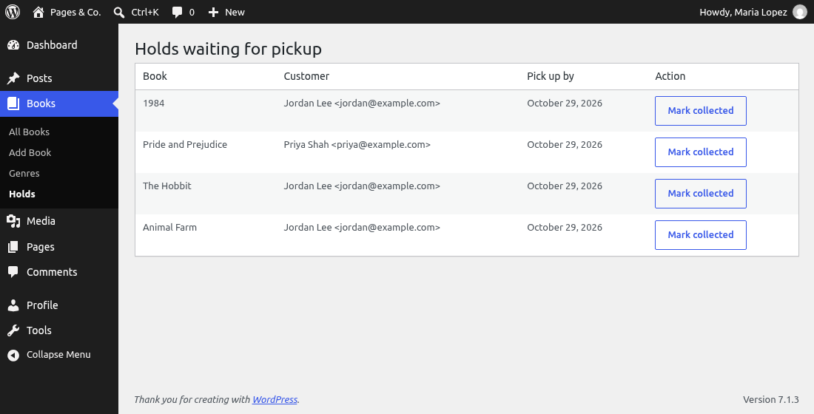
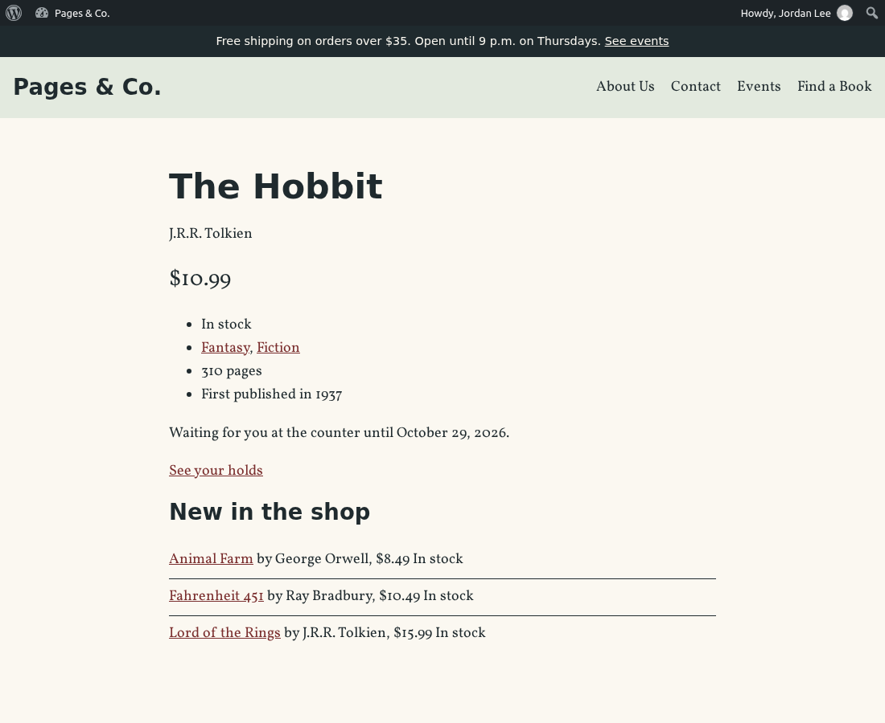

🏁 Lesson 9.1: Final Project: Launch the Pages & Co. Website
Twenty-nine lessons gave you one skill at a time, and each one left something in the Pages & Co. website: a block theme, a plugin with twenty features, custom blocks, an API, tests and a production rehearsal. This project asks for all of it at once. The shop wants its first feature for real customers, Reserve & Pick Up: a customer puts a book aside on the website and collects it at the counter. You will plan it, build it through every layer of WordPress you know, check it the way a reviewer would, release it as version 1.2.0 and deploy it to the rehearsal server without touching the live database. At the end you present it.
🎯 Learning Objectives
By the end of this lesson, you will be able to:
- Turn a client's brief into data, rules, routes, blocks and screens, and decide where each rule is enforced
- Build a feature through every layer of the course: a custom table, settings, a service class with a custom hook, REST routes with real permission callbacks, form handlers, a staff screen, a dynamic and an interactive block, and a theme pattern with live data
- Make it secure and private by default: nonces and capabilities on every change, ownership in every query, escaping, and personal data kept no longer than needed
- Prove the feature with coding standards, PHPUnit tests, a smoke test from outside, accessibility checks and a performance measurement
- Release it from a tagged commit and deploy it as code only, then present your work against a rubric
In This Lesson
📋 The Brief
Maria Lopez runs the shop floor at Pages & Co. (she has been the site's editor since Lesson 2.1). Customers phone every day to ask the staff to put a book aside, the staff write names on sticky notes, and the notes get lost behind the till. Maria wants customers to do it themselves on the website, and she wrote down what the shop needs:
📝 What the shop needs (in Maria's words)
- "A customer with an account can reserve a book from its page. We keep it behind the counter for three days; after that the hold has expired. We open accounts at the counter, as Subscribers: there is no public sign-up."
- "Nobody may have more than three books waiting, the same book twice makes no sense, and a sold-out book cannot be reserved. I want to change the three days and the three books myself, without a developer."
- "Customers see their holds on a My holds page and can cancel one they no longer want. Nobody can see or cancel anyone else's holds. Ever."
- "At the counter, we need a list of what is waiting, and a button to mark a hold as collected."
- "The customer gets an email with the book and the last day to pick it up."
- "It has to work on old phones and with JavaScript blocked, and for customers who use a screen reader. Reserving should not reload the page when it does not have to."
- "The staff picks on the home page still show last month's prices. Fix that while you are at it."
- "Holds are about our customers, so keep them only as long as we need them. And nothing goes live that has not been tested, and nothing goes live on a Thursday evening during the book club."
What you hand in
- Your
wordpress/wp-contentGit repository with a commit per milestone group and the tagrelease-3: Pages & Co. Books 1.2.0 and the pagesco theme 1.2.0 - The release files built from that tag:
pagesco-books.zipandpagesco.zip - The proof: a clean
composer lint, the PHPUnit run, the smoke test's output on your development site and on the rehearsal server, and the performance numbers before and after - A one-page write-up,
RESERVE-AND-PICKUP.mdin your course folder (next topagesco-plan.txt): what you built, where each requirement is handled, the decisions you made and what you would do next (Milestone 10 gives you its outline) - A five-minute showcase of the feature, live (the checklist is in Showcase and Submission)
💡 How to use this lesson
Each milestone says what to build and how to check it, then hides a complete reference solution in a "📘 Reference solution" panel. Try each milestone yourself first, then open the reference and compare: different names and a different design can be just as good, as long as the brief, the checklist and the checks are met. Every reference file and every check on your development site was run on WordPress 7.1.3 and PHP 8.5, in order, exactly as printed; their output cards are the real output. Two kinds of steps could not run that way, and they say so: the PHPUnit run in wp-env and everything on the rehearsal server (Milestone 9) show output recorded on the same setup with the same files, and the browser behavior of the Reserve button was recorded in a real browser. The whole reference, as committed at release-3, is also a download: pagesco-final.zip (the folder pagesco-final/ has a README that says how to compare it with your own work).
⏳ Milestones and Timeline
About five hours, the exercises and the quiz included. Spread it over three sittings, for example Milestones 1 to 4, 5 to 7, and 8 to 10: each milestone ends with something you can check, so each is a natural place to stop and commit.
| # | Milestone | Uses lessons | Time |
|---|---|---|---|
| 1 | Plan, and measure before you build | 1.1, 8.2 | 15 min |
| 2 | The data: a holds table and two settings | 5.1, 5.4, 5.5 | 25 min |
| 3 | The rules, and the email | 1.3, 2.3, 5.3, 1.2 | 30 min |
| 4 | REST routes, form handlers and the staff screen | 5.3, 5.4, 7.1, 7.2 | 30 min |
| 5 | Two blocks: Reserve for Pickup and My Holds | 3.2, 6.1, 6.3, 6.4 | 45 min |
| 6 | Live prices on the front page | 3.3, 6.3 | 15 min |
| 7 | Quality: standards, tests, speed, accessibility | 8.1, 8.2, 8.3 | 30 min |
| 8 | Release 1.2.0 | 8.3, 8.4 | 20 min |
| 9 | Deploy to the rehearsal server | 8.4, 7.3 | 25 min |
| 10 | Write-up and showcase | all | 15 min |
That is 250 minutes of building; the brief, the mistakes, the exercises, the quiz and the journal make up the rest. If you write every file yourself without looking at the reference, expect it to take longer, and count that as time well spent.
🧩 From Requirements to Code
A brief is prose; code needs decisions. The habit from PHP Foundations' final project still works here: underline the nouns to find the data, underline the verbs to find the actions, then sort the rules by where WordPress lets you enforce them.
💡 Mental model: a feature is a stack of layers, and every layer has one job
Think of the counter at Pages & Co. The shelf behind it holds the books (the data). The house rules hang on the wall: three days, three books, no sold-out books (the rules). Customers can ask at the counter, phone, or use the website (the doors: a form, the REST API, a block). Whoever answers, they read the same house rules on the same wall. In code: one table class that only stores, one service class that only decides, and several thin doors that only check who is asking and pass the question on. When a rule changes, you change it in one place, and every door follows.
The data: why a custom table
A hold is one customer, one book, a status and a last day of pickup. Lesson 5.5's storage table gives four homes; here is how a hold fits each:
| Home | For holds |
|---|---|
A post type (hold) | Possible, but a hold has no title, no content, no URL and no revisions; every query would be a meta query on book, user and date (Lesson 8.2 measured what those cost), and holds would appear in places built for content: exports, search, the REST API's post routes |
| User meta or book meta | An array of holds in one meta value cannot be queried ("which holds are waiting today?") and two requests at once overwrite each other's array |
| An option | One row for the whole shop, loaded on every request: wrong for data that grows every day |
| A custom table | One row per hold, typed columns, indexes for the two questions the shop asks ("this customer's holds", "what is waiting"), and a clean delete when the data is no longer needed. The plugin already has one, the events table, so the pattern is known: a table class with dbDelta(), a version option and maybe_upgrade() on init |
One more decision: "expired" is never stored. It depends on today's date and the pickup date, so it is computed whenever a hold is shown. A stored "expired" would need a job to update it, and would be wrong between the moment it should change and the moment the job runs.
Where each requirement is handled
| Requirement | Handled by | Milestone |
|---|---|---|
| 1. Reserve; three days; expired | Holds::place() computes pickup_by from the setting; Holds::status() computes "expired" | 2, 3 |
| 2. Limits; no duplicates; not sold out; settings | Holds::place(); settings hold_days and max_holds on Settings > Pages & Co. Books | 2, 3 |
| 3. My holds; cancel; only your own | the My Holds block; HoldsTable::finish() with the user ID in its WHERE; a "not found" for anyone else's hold | 3, 4, 5 |
| 4. Staff list and "collected" | Books > Holds (Admin\HoldsPage), the collect handler, capability edit_others_posts | 4 |
| 5. Email | the plugin's own action pagesco_books_hold_placed, and Holds\HoldMail listening to it | 3 |
| 6. No JavaScript, screen readers, no reload | forms that post to admin-post.php; an Interactivity API store that sends the same form to the REST API; role="status" messages | 4, 5, 7 |
| 7. Live prices on the home page | the pagesco/book binding source learns a book's slug; the theme's staff picks pattern binds its prices | 6 |
| 8. Personal data; tested; safe deploys | the daily job deletes holds 30 days after their pickup date; uninstall drops the table; lint, tests, smoke test; a code-only deploy with a backup first | 7, 8, 9 |
What happens when a customer presses Reserve
With JavaScript, the Reserve block's store sends the form to the REST API instead of the browser; without it, the browser posts the same form to admin-post.php. Both doors end in the same method:
The files
File (in wp-content/) | New or changed | Job |
|---|---|---|
plugins/pagesco-books/src/Holds/HoldsTable.php | new (feature) | the table and its queries; no rules |
…/src/Holds/Holds.php | new (not a feature) | every rule, the status, the messages |
…/src/Holds/HoldMail.php | new (feature) | the email, on the plugin's own action |
…/src/Holds/HoldActions.php | new (feature) | three admin-post.php handlers and the forms' hidden fields |
…/src/Rest/HoldsEndpoint.php | new (feature) | GET and POST /pagesco/v1/holds, DELETE /pagesco/v1/holds/<id> |
…/src/Admin/HoldsPage.php | new (feature) | Books > Holds for staff |
…/src/blocks/reserve/, …/src/blocks/my-holds/ | new blocks | Reserve for Pickup (interactive) and My Holds (dynamic) |
…/src/Plugin.php, Activator.php, Settings.php, Admin/SettingsPage.php, DailySync.php, BookBindings.php, uninstall.php | changed | five new features; table on activation; two settings; old holds deleted; slugs in bindings; uninstall cleanup |
…/tests/HoldsTest.php | new | five tests of the rules and the REST door |
…/pagesco-books.php, package.json, readme.txt, phpcs.xml.dist, languages/pagesco-books.pot | changed | version 1.2.0, the release file list, the changelog, a documented standards exception, the new strings |
themes/pagesco/templates/single-book.html, patterns/featured-books.php, style.css | changed | the Reserve block on book pages, live prices, theme 1.2.0 |
Five new features means Plugin::feature_classes() grows from twenty to twenty-five lines, each added together with its class (Lesson 5.1's rule: one class in src/, one line in the list). A line for a class that does not exist yet stops the whole site with "Class not found", so add each line together with its file.
🔐 The Security and Privacy Checklist
Lesson 5.3's habits, turned into lines you can tick for this feature. The rubric gives this list the most points, and the smoke test of Milestone 5 proves several lines from outside the code.
| Threat | The rule in Reserve & Pick Up | Proven by |
|---|---|---|
| Cross-site request forgery | Every form carries a nonce for its action and its ID (pagesco_books_place_hold_30); the REST API needs the wp_rest nonce with cookies; nothing changes on GET | Smoke test: a form without a nonce gets 403 |
| Broken access control | Customers need to be logged in (read); staff actions need edit_others_posts, checked in the handler and in the menu; every REST route has a permission_callback that returns a WP_Error with rest_authorization_required_code() | Smoke test: visitors get 401, customers cannot collect; Books > Holds refuses an author |
| Someone else's hold (IDOR) | The user ID comes from the login, never from a form; cancelling puts it in the SQL WHERE; another customer's hold is "not found", not "forbidden", so it does not even confirm that it exists | Milestone 3's checks, PHPUnit |
| Cross-site scripting | Escape late in every template (esc_html, esc_attr, esc_url); messages chosen from a fixed list by a code in the address, never text from the address; data-wp-text sets text, not HTML | Code review, composer lint |
| SQL injection | Every query through $wpdb->prepare() with %i, %d and %s, or $wpdb->insert()/update() with formats | Code review, composer lint |
| Open redirects | Handlers redirect with wp_safe_redirect() to addresses they build themselves | Code review |
| Abuse | At most max_holds waiting holds per customer; only logged-in customers, whose accounts the shop creates | Milestone 3's checks, PHPUnit |
| Personal data | Holds name customers: they are deleted 30 days after their pickup date by the daily job, dropped on uninstall, never sent to the supplier, and listed in the readme | Milestone 2 and 8, readme.txt |
📏 How Your Work Is Assessed
Score yourself, or swap with a classmate: each area earns 0 (missing), half (meets) or all of its points (exceeds).
| Area | Points | Meets | Exceeds |
|---|---|---|---|
| Features | 20 | Reserve, My holds, cancel, staff list and collect, the email and live prices all work in the browser | Every refusal has a clear message; expired holds show as expired; empty states are friendly; the settings change the rules without code |
| Data and rules | 15 | A table with keys created by dbDelta(); the rules in one place | Indexes for the real queries; "expired" computed, not stored; the table created on update by maybe_upgrade(), not only on activation; a custom hook others can use |
| Security and privacy | 20 | Nonces, capabilities, escaping and prepared queries everywhere | Every line of the checklist, with ownership in SQL, "not found" for other people's holds, and old holds deleted on schedule |
| Blocks and experience | 15 | Both blocks render the right state for visitors, customers and sold-out books | Works without JavaScript; no reload with it; announced to screen readers; no duplicate IDs; a sensible editor preview |
| Code quality | 10 | composer lint is clean; the feature pattern of Lesson 5.1 | Every standards exception documented with a reason; every string translatable with translator comments; a new POT |
| Testing | 10 | You tested every rule by hand | PHPUnit tests for the rules and the REST door pass in wp-env, and the smoke test passes on both sites |
| Release and deploy | 5 | A tagged release deployed to the rehearsal server | Versions bumped everywhere they live, the ZIP checked before upload, a backup before the deploy, the database untouched |
| Write-up and showcase | 5 | A write-up that says what you built | The write-up maps every requirement to code and names a decision you would defend; the showcase follows the checklist and fits five minutes |
80 or more out of 100 is a solid, portfolio-ready project. The reference solution is written to score full points; yours can get there with a different design.
🎤 Showcase and Submission
Developers are judged on what they can show and explain, not only on what they wrote. Plan a five-minute showcase for a classmate, your instructor or a friend who plays Maria, on your development site (Mailpit and Books > Holds are there) with the rehearsal server open in a second tab.
✅ Showcase checklist (five minutes)
- The problem (30 seconds): the sticky notes, in one sentence each from the brief.
- A visitor opens a book: "Log in to reserve". Then a customer logs in and reserves it: no reload, the message is announced. Show the email in Mailpit.
- The rules: reserve the same book again, then a sold-out one, then one too many. Change "Holds per customer" in the settings and try again.
- My holds: the list, a cancel. Then turn JavaScript off in the browser and reserve again: it still works.
- The counter: Books > Holds as Maria, "Mark collected".
- The home page: change Dune's price in the editor, reload the home page.
- The proof:
composer lint, the PHPUnit summary, the smoke test's output on the rehearsal server,git tag -n. - One decision you would defend (why a custom table, why "not found" instead of "forbidden", why expired is computed) and one thing you would do next.
📦 Submission checklist
git tag -ninwordpress/wp-contentlistsrelease-3, andgit statusis cleanpagesco-books.zip(1.2.0) andpagesco.zip(1.2.0) are kept with your release notes- The output of
composer lint, the PHPUnit run and both smoke tests is saved in your write-up or next to it - The rehearsal server runs 1.2.0, has a My holds page, and its backup from before the deploy is in
backups/ RESERVE-AND-PICKUP.mdmaps every requirement to the code, lists your decisions and next steps- If you share the project publicly (a portfolio, a Git host), share the code and screenshots only: never
.env, database dumps or passwords
⚠️ Common Mistakes
Three mistakes that cost the most in a project like this one, met on purpose before you build, so you recognize them when they happen for real. The demos change nothing that lasts.
1. A release ZIP without the new folder
Lesson 8.3 gave package.json a "files" list: npm run plugin-zip packs exactly those paths and nothing else. The list names src/Admin, src/Rest and the other folders that existed then. Your feature adds a folder, src/Holds. Ask npm what a ZIP would contain, with a stand-in file in the new folder (in the plugin's folder, with Node as in Lesson 6.1; npm pack --dry-run lists a package's files using the same list, and writes nothing):
mkdir -p src/Holds
printf '<?php\n' > src/Holds/HoldsTable.php
npm pack --dry-run 2>&1 | grep -c ' src/'
npm pack --dry-run 2>&1 | grep -c ' src/Holds/'
rm -r src/HoldsOutput
24
0Twenty-four PHP files from src/, none from src/Holds/. Nothing warns you: the build succeeds, the ZIP installs, wp plugin install --force says "Plugin updated successfully". Then the first request runs Plugin::boot(), which creates every feature in its list, and one of them is not in the ZIP. This is what the rehearsal server's log said when a ZIP built this way was deployed to it (recorded, docker compose logs wordpress in pagesco-live, the stack trace shortened):
Output (recorded on the rehearsal site)
wordpress-1 | [26-Oct-2026 07:42:33 UTC] PHP Warning: include(/var/www/html/wp-content/plugins/pagesco-books/vendor/composer/../../src/Holds/HoldsTable.php): Failed to open stream: No such file or directory in /var/www/html/wp-content/plugins/pagesco-books/vendor/composer/ClassLoader.php on line 576
wordpress-1 | [26-Oct-2026 07:42:33 UTC] PHP Warning: include(): Failed opening '/var/www/html/wp-content/plugins/pagesco-books/vendor/composer/../../src/Holds/HoldsTable.php' for inclusion (include_path='.:/usr/local/lib/php') in /var/www/html/wp-content/plugins/pagesco-books/vendor/composer/ClassLoader.php on line 576
wordpress-1 | [26-Oct-2026 07:42:33 UTC] PHP Fatal error: Uncaught Error: Class "PagesCo\Books\Holds\HoldsTable" not found in /var/www/html/wp-content/plugins/pagesco-books/src/Plugin.php:54
wordpress-1 | Stack trace:
wordpress-1 | #0 /var/www/html/wp-includes/class-wp-hook.php(353): PagesCo\Books\Plugin->boot('')
wordpress-1 | ...
wordpress-1 | #3 /var/www/html/wp-settings.php(630): do_action('plugins_loaded')
wordpress-1 | ...
wordpress-1 | thrown in /var/www/html/wp-content/plugins/pagesco-books/src/Plugin.php on line 54Read it from the bottom up: Plugin::boot(), on plugins_loaded (frame #3, Lesson 2.2's load order), asked for HoldsTable. The two warnings above it say why the class is missing: composer install --optimize-autoloader ran in a copy that had src/Holds, so its class map names src/Holds/HoldsTable.php, and the ZIP does not contain the file. Every page answers "There has been a critical error on this website", and WP-CLI stops with the same message, until you roll back with the previous release, skipping the broken plugin while you do it: wp --skip-plugins plugin install /deploy/pagesco-books-1.1.1.zip --force (Milestone 9 keeps 1.1.1 under that name before uploading 1.2.0) (Lesson 8.1's --skip-plugins, Lesson 8.4's rollback; on the rehearsal server the front page answered 200 again right after). Fix: every new top-level folder in src/ goes into "files" in the same commit, and the release check of Milestone 8 counts the new folder's files in the ZIP before anything is uploaded.
2. Asking whether someone may do this kind of thing, not this thing (silent)
A "delete" handler that checks current_user_can( 'delete_posts' ) asks a general question: may this user delete posts at all? Devon, an author, may: his own. The question a handler must ask is about this post. As Devon, about Maria's "Welcome" post (ID 15), from the WP-CLI container:
wp eval 'var_dump( current_user_can( "delete_posts" ), current_user_can( "delete_post", 15 ) );' --user=devonOutput
bool(true)
bool(false)The general check says yes; only the check with the ID (a meta capability, Lesson 2.1) says no. A handler with the first check deletes anyone's post for anyone who may delete their own, with no error anywhere: this is the WordPress form of the "insecure direct object reference" from PHP Foundations. Fix: for posts, pass the ID (edit_post, delete_post, read_post). Holds are not posts, so WordPress has no meta capability for them: there, ownership goes into the query, WHERE id = %d AND user_id = %d, with the user ID from the login. Milestone 3 builds exactly that, and proves it.
3. A block template that reuses a WordPress global's name
A render.php that keeps the book's title in $title looks harmless. A stand-in block template, checked with the plugin's own coding standards (with Composer as in Lesson 8.1):
<?php
/**
* Lesson 9.1, Common Mistake 3: a render.php that names its variable $title.
*
* @package PagesCo\Books
*/
defined( 'ABSPATH' ) || exit;
$title = get_the_title( $block->context['postId'] ?? 0 );
?>
<p <?php echo get_block_wrapper_attributes(); // phpcs:ignore WordPress.Security.EscapeOutput.OutputNotEscaped -- core escapes the attributes. ?>><?php echo esc_html( $title ); ?></p>vendor/bin/phpcs src/blocks/demo/render.php; echo "exit status $?"
rm -r src/blocks/demoOutput
FILE: src/blocks/demo/render.php
--------------------------------------------------------------------------------
FOUND 1 ERROR AFFECTING 1 LINE
--------------------------------------------------------------------------------
10 | ERROR | Overriding WordPress globals is prohibited. Found assignment to
| | $title (WordPress.WP.GlobalVariablesOverride.Prohibited)
--------------------------------------------------------------------------------
...
exit status 1What it means: $title is one of WordPress's globals (wp-admin keeps the screen's title in it), and code at the top level of a PHP file writes globals. WordPress includes a block's render.php inside a function, so here the variable happens to be local, which is why Lesson 8.1 excused the prefix rule for these files; the sniff cannot know that, and the same lines pasted into a theme template or a plugin file at the top level would overwrite the admin's title. Fix: a specific name, $book_title, costs nothing and makes the warning go away for good; that is what the My Holds block does. The rule of thumb for any standards finding: fix it when the fix is cheap, document an exception when it is not (Milestone 7 has one of those).
🛠️ Project: Reserve & Pick Up
Ten milestones. Each says what to build, hides a reference solution, and ends with checks you run yourself. Work in your development project (pagesco-dev), with your editor in wordpress/wp-content; commands are run from the WP-CLI container as always, unless a milestone says otherwise. Allow about 250 minutes.
🛠️ Milestone 1: Plan, and measure before you build (15 min)
Two things before any code. First, the plan: open pagesco-plan.txt (Lesson 1.1) and add a heading "Reserve & Pick Up" with the brief's eight requirements in your own words, the decisions of From Requirements to Code you agree with (and the ones you would make differently), and the list of files. Writing it down now is what makes the write-up of Milestone 10 a fifteen-minute job.
Reserve & Pick Up (Lesson 9.1)
Data: custom table wp_pagesco_holds (id, book_id, user_id, status waiting|collected|cancelled, pickup_by, created_at);
"expired" = waiting and pickup_by before today, computed. Settings: hold_days 3, max_holds 3.
Rules: one class, Holds (place, cancel, collect). Doors: REST pagesco/v1/holds, admin-post forms, blocks.
Privacy: delete holds 30 days after pickup_by (daily job); uninstall drops the table.
Done when: lint clean, tests green, smoke test ok on dev and live, released as 1.2.0.Second, a baseline. Lesson 8.2's rule was "measure first": the new blocks will run queries, and you want to know what they cost. Bring back Lesson 8.2's query report, a must-use plugin that writes each request's query count to the debug log when SAVEQUERIES is on. Create wordpress/wp-content/mu-plugins/pagesco-query-report.php:
<?php
/**
* Plugin Name: Pages & Co. Query Report (temporary)
* Description: Writes how many database queries each web request made to the debug log. Needs SAVEQUERIES.
*/
add_action(
'shutdown',
function () {
global $wpdb;
if ( ! defined( 'SAVEQUERIES' ) || ! SAVEQUERIES || wp_doing_cron() || defined( 'WP_CLI' ) ) {
return;
}
// WP-Cron's own check runs on some requests and not on others: leave it out, so runs compare.
$queries = array_filter(
$wpdb->queries ?? array(),
fn( $query ) => ! str_contains( $query[2], 'wp_cron' )
);
// Options something asked for that do not exist (WordPress remembers them for the request).
$missing = array_filter(
array_keys( (array) wp_cache_get( 'notoptions', 'options' ) ),
fn( $name ) => ! str_starts_with( $name, '_' )
);
error_log(
sprintf(
'%s: %d queries; missing options: %s',
strtok( $_SERVER['REQUEST_URI'], '?' ),
count( $queries ),
$missing ? implode( ', ', $missing ) : 'none'
)
);
}
);wp config set SAVEQUERIES true --raw
curl -s -o /dev/null http://localhost:8080/
curl -s -o /dev/null http://localhost:8080/books/dune/
curl -s -o /dev/null http://localhost:8080/find-a-book/
tail -n 3 wp-content/debug.log
wp config delete SAVEQUERIESOutput (the last lines of debug.log)
Success: Added the constant 'SAVEQUERIES' to the 'wp-config.php' file with the raw value 'true'.
[26-Oct-2026 07:46:54 UTC] /: 22 queries; missing options: can_compress_scripts, site_logo
[26-Oct-2026 07:46:54 UTC] /books/dune/: 25 queries; missing options: can_compress_scripts, site_logo
[26-Oct-2026 07:46:54 UTC] /find-a-book/: 25 queries; missing options: can_compress_scripts, site_logo
Success: Deleted the constant 'SAVEQUERIES' from the 'wp-config.php' file.Write the three numbers in your plan. They are a visitor's view: no one is logged in. (If you have opened wp-admin in a browser since Lesson 8.2, can_compress_scripts exists on your site and each number is one lower, as Lesson 8.2 explained.) SAVEQUERIES is off again; the report plugin stays until Milestone 7 and does nothing without it.
🛠️ Milestone 2: The data: a holds table and two settings (25 min)
Build the storage and its lifetime, nothing else yet:
src/Holds/HoldsTable.php, a feature in the namespacePagesCo\Books\Holds, modeled onEventsTable(Lesson 5.5):DB_VERSION1, the version optionpagesco_books_holds_db_version,maybe_upgrade()oninit,install(), and the queries the feature needs:add(),get(),for_user(),waiting()(still waiting and not expired, for a customer and/or a book),finish()(waiting to collected or cancelled, optionally only for one user) anddelete_before(). Indexes for the two real questions: a customer's holds by status, and holds by book.- Its line in
Plugin::feature_classes(),HoldsTable::install()inActivator::activate(), the table and its option inuninstall.php, and inDailySync::run()the deletion of holds whose pickup date is more than 30 days ago. - Two settings in
Settings:hold_days(default 3, 1 to 14) andmax_holds(default 3, 1 to 10), with a "Reserve & Pick Up" section on the settings page.
📘 Reference solution
wordpress/wp-content/plugins/pagesco-books/src/Holds/HoldsTable.php. One prepared statement serves every combination of filters in waiting(): %d = 0 OR user_id = %d switches the filter off when its value is 0.
<?php
/**
* The customers' holds, kept in a custom table.
*
* @package PagesCo\Books
*/
namespace PagesCo\Books\Holds;
use PagesCo\Books\Feature;
/**
* Creates the {prefix}pagesco_holds table, and reads and writes its rows. No business rules here: see Holds.
*/
final class HoldsTable implements Feature {
/**
* The schema version this code expects. Raise it whenever schema() changes.
*/
public const DB_VERSION = 1;
/**
* The option that records the schema version installed in this database.
*/
public const VERSION_OPTION = 'pagesco_books_holds_db_version';
/**
* Days after its pickup date that a hold is kept, whatever its status: holds are personal data.
*/
public const KEEP_DAYS = 30;
/**
* Checks the schema on every request, so a plugin update creates the table without a reactivation.
*/
public function register(): void {
add_action( 'init', array( $this, 'maybe_upgrade' ) );
}
/**
* The table's full name, with this site's table prefix.
*/
public static function name(): string {
global $wpdb;
return $wpdb->prefix . 'pagesco_holds';
}
/**
* Runs install() when the database is older than this code.
*/
public function maybe_upgrade(): void {
if ( (int) get_option( self::VERSION_OPTION, 0 ) < self::DB_VERSION ) {
self::install();
}
}
/**
* Creates the table, or brings an existing one up to schema(), and records the version.
*/
public static function install(): void {
require_once ABSPATH . 'wp-admin/includes/upgrade.php';
dbDelta( self::schema() );
update_option( self::VERSION_OPTION, self::DB_VERSION );
}
/**
* The CREATE TABLE statement in the exact shape dbDelta() expects.
*/
private static function schema(): string {
global $wpdb;
$table = self::name();
$collate = $wpdb->get_charset_collate();
return "CREATE TABLE {$table} (
id bigint unsigned NOT NULL AUTO_INCREMENT,
book_id bigint unsigned NOT NULL,
user_id bigint unsigned NOT NULL,
status varchar(20) NOT NULL DEFAULT 'waiting',
pickup_by date NOT NULL,
created_at datetime NOT NULL,
PRIMARY KEY (id),
KEY user_status (user_id,status),
KEY book_id (book_id)
) {$collate};";
}
/**
* Adds a waiting hold and returns its ID (0 if the insert failed).
*
* @param int $book_id The book.
* @param int $user_id The customer.
* @param string $pickup_by The last day of pickup, Y-m-d in the site's time zone.
*/
public static function add( int $book_id, int $user_id, string $pickup_by ): int {
global $wpdb;
$inserted = $wpdb->insert(
self::name(),
array(
'book_id' => $book_id,
'user_id' => $user_id,
'status' => 'waiting',
'pickup_by' => $pickup_by,
'created_at' => current_time( 'mysql', true ),
),
array( '%d', '%d', '%s', '%s', '%s' )
);
return $inserted ? (int) $wpdb->insert_id : 0;
}
/**
* One hold, or null.
*
* @param int $hold_id The hold's ID.
*/
public static function get( int $hold_id ): ?object {
global $wpdb;
return $wpdb->get_row(
$wpdb->prepare( 'SELECT id, book_id, user_id, status, pickup_by, created_at FROM %i WHERE id = %d', self::name(), $hold_id )
);
}
/**
* A customer's holds, newest first.
*
* @param int $user_id The customer.
* @return object[]
*/
public static function for_user( int $user_id ): array {
global $wpdb;
return $wpdb->get_results(
$wpdb->prepare( 'SELECT id, book_id, user_id, status, pickup_by, created_at FROM %i WHERE user_id = %d ORDER BY id DESC', self::name(), $user_id )
);
}
/**
* The holds still waiting at the counter, with their pickup date on or after a day, soonest first.
*
* @param string $from Y-m-d: holds whose pickup date is before it are expired, and left out.
* @param int $user_id Only this customer's holds, or 0 for everyone's.
* @param int $book_id Only holds on this book, or 0 for every book.
* @return object[]
*/
public static function waiting( string $from, int $user_id = 0, int $book_id = 0 ): array {
global $wpdb;
// "%d = 0 OR ..." turns a filter off when its value is 0, so one prepared statement covers every case.
return $wpdb->get_results(
$wpdb->prepare(
'SELECT id, book_id, user_id, status, pickup_by, created_at FROM %i
WHERE status = %s AND pickup_by >= %s AND ( %d = 0 OR user_id = %d ) AND ( %d = 0 OR book_id = %d )
ORDER BY pickup_by ASC, id ASC',
self::name(),
'waiting',
$from,
$user_id,
$user_id,
$book_id,
$book_id
)
);
}
/**
* Changes a waiting hold's status, and returns whether a row changed.
*
* @param int $hold_id The hold.
* @param string $status The new status: collected or cancelled.
* @param int $user_id Only if it belongs to this customer, or 0 for any customer (staff).
*/
public static function finish( int $hold_id, string $status, int $user_id = 0 ): bool {
global $wpdb;
$where = array(
'id' => $hold_id,
'status' => 'waiting',
);
if ( $user_id ) {
$where['user_id'] = $user_id;
}
return 1 === $wpdb->update( self::name(), array( 'status' => $status ), $where, array( '%s' ), array( '%d', '%s', '%d' ) );
}
/**
* Deletes the holds whose pickup date is before a day, and returns how many it deleted.
*
* @param string $date Y-m-d.
*/
public static function delete_before( string $date ): int {
global $wpdb;
return (int) $wpdb->query(
$wpdb->prepare( 'DELETE FROM %i WHERE pickup_by < %s', self::name(), $date )
);
}
}The feature's line goes at the end of Plugin::feature_classes(), after Abilities::class,. In your editor, or with sed from the WP-CLI container (the gap after a\ is three tabs):
sed -i '/Abilities::class,/a\ Holds\\HoldsTable::class,' wp-content/plugins/pagesco-books/src/Plugin.php
grep -c '::class,' wp-content/plugins/pagesco-books/src/Plugin.phpOutput
21src/Activator.php: one call after the events table.
<?php
/**
* What happens when the plugin is activated or deactivated.
*
* @package PagesCo\Books
*/
namespace PagesCo\Books;
/**
* Activation and deactivation callbacks (uninstall.php cleans up for good).
*/
final class Activator {
/**
* Runs once, when an administrator activates the plugin.
*/
public static function activate(): void {
$author = get_role( 'author' );
add_role(
'pagesco_bookseller',
'Bookseller',
$author ? $author->capabilities : array( 'read' => true )
);
// init has already run on this request: register the post type and taxonomy now, so their rules exist.
( new BookPostType() )->register_post_type();
( new GenreTaxonomy() )->register_taxonomy();
flush_rewrite_rules();
// Create the events table, or bring it up to date (Lesson 5.5).
EventsTable::install();
// Create the holds table (Lesson 9.1).
Holds\HoldsTable::install();
// Start the daily WP-Cron job (Lesson 7.3).
DailySync::schedule();
// The settings row, empty: it is autoloaded, so reading the settings costs no query on any
// request, and empty, so every default still applies, in the site's language (Lesson 8.2).
add_option( Settings::OPTION, array() );
}
/**
* Runs once, when the plugin is deactivated. Keeps all data.
*/
public static function deactivate(): void {
// Remove the post type's and taxonomy's rules, so /books/ stops answering while the plugin is off.
unregister_post_type( BookPostType::NAME );
unregister_taxonomy( GenreTaxonomy::NAME );
flush_rewrite_rules();
// A deactivated plugin's cron job would still be due every day, with no callback to run.
DailySync::unschedule();
}
}src/DailySync.php: the daily job forgets old holds.
<?php
/**
* The shop's daily WP-Cron job.
*
* @package PagesCo\Books
*/
namespace PagesCo\Books;
use PagesCo\Books\Holds\HoldsTable;
use PagesCo\Books\Supplier\Availability;
/**
* Once a day: refresh the supplier's availability, remove events that are over, and forget old holds.
*/
final class DailySync implements Feature {
/**
* The cron hook. WP-Cron fires it as an action, so the callback is added like any action.
*/
public const HOOK = 'pagesco_books_daily_sync';
/**
* Connects the job to its hook, on every request: WP-Cron runs on whichever request finds it due.
*/
public function register(): void {
add_action( self::HOOK, array( $this, 'run' ) );
}
/**
* Schedules the job once a day, from 3 a.m. tomorrow in the site's time zone. Called on activation.
*/
public static function schedule(): void {
if ( wp_next_scheduled( self::HOOK ) ) {
return;
}
$first = new \DateTimeImmutable( 'tomorrow 03:00', wp_timezone() );
wp_schedule_event( $first->getTimestamp(), 'daily', self::HOOK );
}
/**
* Removes the job. Called on deactivation.
*/
public static function unschedule(): void {
wp_clear_scheduled_hook( self::HOOK );
}
/**
* The job itself. It runs without a logged-in user, so it checks no capabilities and prints nothing.
*/
public function run(): void {
$availability = Plugin::instance()->feature( Availability::class );
if ( $availability instanceof Availability ) {
$availability->refresh();
}
// Events that started before today are over (Lesson 5.5's promise).
EventsTable::delete_before( wp_date( 'Y-m-d 00:00:00' ) );
// Holds are personal data: keep them a month after their pickup date, no longer (Lesson 9.1).
HoldsTable::delete_before( wp_date( 'Y-m-d', time() - HoldsTable::KEEP_DAYS * DAY_IN_SECONDS ) );
}
}uninstall.php: the table and its version option always go, like the events.
<?php
/**
* Removes the plugin's data when an administrator deletes the plugin.
*
* Always: the role, the settings, the events and holds tables and the supplier transient (Lessons 5.4, 5.5, 7.3, 9.1).
* Only when an administrator turned on "Delete all books, genres and book details": the shop's content too (Lesson 8.3).
*
* @package PagesCo\Books
*/
defined( 'WP_UNINSTALL_PLUGIN' ) || exit;
global $wpdb;
// Read the choice before the settings are deleted below. The plugin is not loaded: no Settings class here.
$pagesco_books_settings = get_option( 'pagesco_books_settings', array() );
if ( is_array( $pagesco_books_settings ) && ! empty( $pagesco_books_settings['delete_data'] ) ) {
// Every book in every status, trash included. wp_delete_post() also deletes its meta and term links.
$pagesco_books_ids = get_posts(
array(
'post_type' => 'book',
'post_status' => array_keys( get_post_stati() ),
'numberposts' => -1,
'fields' => 'ids',
)
);
foreach ( $pagesco_books_ids as $pagesco_books_id ) {
wp_delete_post( $pagesco_books_id, true );
}
// The taxonomy is not registered while the plugin is uninstalled: register it, or get_terms() fails.
register_taxonomy( 'genre', 'book' );
$pagesco_books_terms = get_terms(
array(
'taxonomy' => 'genre',
'hide_empty' => false,
'fields' => 'ids',
)
);
foreach ( is_array( $pagesco_books_terms ) ? $pagesco_books_terms : array() as $pagesco_books_term ) {
wp_delete_term( $pagesco_books_term, 'genre' );
}
}
remove_role( 'pagesco_bookseller' );
delete_option( 'pagesco_books_settings' );
delete_option( 'pagesco_books_db_version' );
delete_option( 'pagesco_books_holds_db_version' );
$wpdb->query( $wpdb->prepare( 'DROP TABLE IF EXISTS %i', $wpdb->prefix . 'pagesco_events' ) );
$wpdb->query( $wpdb->prepare( 'DROP TABLE IF EXISTS %i', $wpdb->prefix . 'pagesco_holds' ) );
delete_transient( 'pagesco_books_supplier_availability' );src/Settings.php: two defaults, two sanitized and range-checked values (the pattern of Lesson 5.4).
<?php
/**
* The shop's settings: one option, an array of values with defaults.
*
* @package PagesCo\Books
*/
namespace PagesCo\Books;
/**
* Registers the pagesco_books_settings option and reads it for the rest of the plugin.
*/
final class Settings implements Feature {
/**
* The option's name in wp_options.
*/
public const OPTION = 'pagesco_books_settings';
/**
* The option group the settings form posts (settings_fields() prints it).
*/
public const GROUP = 'pagesco_books';
/**
* Registers the setting on init, so its sanitizing and default apply everywhere, not only in wp-admin.
*/
public function register(): void {
add_action( 'init', array( $this, 'register_setting' ) );
}
/**
* Every setting with its default value.
*
* @return array{notice_extra: string, show_events_link: bool, books_per_page: int, events_limit: int, delete_data: bool, hold_days: int, max_holds: int}
*/
public static function defaults(): array {
return array(
'notice_extra' => __( 'Open until 9 p.m. on Thursdays.', 'pagesco-books' ),
'show_events_link' => true,
'books_per_page' => 6,
'events_limit' => 5,
'delete_data' => false,
'hold_days' => 3,
'max_holds' => 3,
);
}
/**
* Returns one setting: the saved value, or its default when nothing is saved yet.
*
* @param string $key A key of defaults().
* @return mixed
*/
public static function get( string $key ) {
$settings = wp_parse_args( get_option( self::OPTION, array() ), self::defaults() );
return $settings[ $key ] ?? null;
}
/**
* Tells WordPress about the option: its group, type, sanitize callback and default.
*/
public function register_setting(): void {
register_setting(
self::GROUP,
self::OPTION,
array(
'type' => 'object',
'sanitize_callback' => array( $this, 'sanitize' ),
'default' => self::defaults(),
)
);
}
/**
* Cleans the submitted values before WordPress stores them. Out-of-range numbers keep the saved value.
*
* @param mixed $input The submitted settings.
* @return array
*/
public function sanitize( $input ): array {
$input = is_array( $input ) ? $input : array();
$saved = wp_parse_args( get_option( self::OPTION, array() ), self::defaults() );
$clean = array(
'notice_extra' => sanitize_text_field( $input['notice_extra'] ?? '' ),
'show_events_link' => ! empty( $input['show_events_link'] ),
'books_per_page' => absint( $input['books_per_page'] ?? $saved['books_per_page'] ),
'events_limit' => absint( $input['events_limit'] ?? $saved['events_limit'] ),
'delete_data' => ! empty( $input['delete_data'] ),
'hold_days' => absint( $input['hold_days'] ?? $saved['hold_days'] ),
'max_holds' => absint( $input['max_holds'] ?? $saved['max_holds'] ),
);
if ( $clean['books_per_page'] < 1 || $clean['books_per_page'] > 24 ) {
add_settings_error( self::OPTION, 'books_per_page', __( 'Books per list must be between 1 and 24.', 'pagesco-books' ) );
$clean['books_per_page'] = $saved['books_per_page'];
}
if ( $clean['events_limit'] < 1 || $clean['events_limit'] > 20 ) {
add_settings_error( self::OPTION, 'events_limit', __( 'Events to show must be between 1 and 20.', 'pagesco-books' ) );
$clean['events_limit'] = $saved['events_limit'];
}
if ( $clean['hold_days'] < 1 || $clean['hold_days'] > 14 ) {
add_settings_error( self::OPTION, 'hold_days', __( 'Days to keep a hold must be between 1 and 14.', 'pagesco-books' ) );
$clean['hold_days'] = $saved['hold_days'];
}
if ( $clean['max_holds'] < 1 || $clean['max_holds'] > 10 ) {
add_settings_error( self::OPTION, 'max_holds', __( 'Holds per customer must be between 1 and 10.', 'pagesco-books' ) );
$clean['max_holds'] = $saved['max_holds'];
}
return $clean;
}
}src/Admin/SettingsPage.php: a fourth section, before Uninstall, with two number fields.
<?php
/**
* The Settings > Pages & Co. Books screen.
*
* @package PagesCo\Books
*/
namespace PagesCo\Books\Admin;
use PagesCo\Books\Feature;
use PagesCo\Books\Settings;
/**
* Adds the settings page and builds its form with the Settings API.
*/
final class SettingsPage implements Feature {
/**
* The page's slug: options-general.php?page=pagesco-books.
*/
public const SLUG = 'pagesco-books';
/**
* Hooks the menu item, the sections and fields, and the Plugins screen link.
*/
public function register(): void {
add_action( 'admin_menu', array( $this, 'add_page' ) );
add_action( 'admin_init', array( $this, 'add_fields' ) );
add_filter( 'plugin_action_links_' . plugin_basename( PAGESCO_BOOKS_FILE ), array( $this, 'add_settings_link' ) );
}
/**
* Adds the page under Settings, for users who can manage options.
*/
public function add_page(): void {
add_options_page(
__( 'Pages & Co. Books Settings', 'pagesco-books' ),
__( 'Pages & Co. Books', 'pagesco-books' ),
'manage_options',
self::SLUG,
array( $this, 'render' )
);
}
/**
* Describes the form: four sections, seven fields.
*/
public function add_fields(): void {
add_settings_section(
'pagesco_books_notice',
__( 'Store notice', 'pagesco-books' ),
array( $this, 'render_notice_intro' ),
self::SLUG
);
add_settings_field(
'notice_extra',
__( 'Notice addition', 'pagesco-books' ),
array( $this, 'render_text_field' ),
self::SLUG,
'pagesco_books_notice',
array(
'key' => 'notice_extra',
'label_for' => 'pagesco-notice-extra',
'description' => __( 'Added after the free-shipping text. Leave empty to show only that text.', 'pagesco-books' ),
)
);
add_settings_field(
'show_events_link',
__( 'Events link', 'pagesco-books' ),
array( $this, 'render_checkbox_field' ),
self::SLUG,
'pagesco_books_notice',
array(
'key' => 'show_events_link',
'label_for' => 'pagesco-show-events-link',
'label' => __( 'Show a "See events" link in the notice', 'pagesco-books' ),
)
);
add_settings_section(
'pagesco_books_lists',
__( 'Catalog and events', 'pagesco-books' ),
'__return_false',
self::SLUG
);
add_settings_field(
'books_per_page',
__( 'Books per list', 'pagesco-books' ),
array( $this, 'render_number_field' ),
self::SLUG,
'pagesco_books_lists',
array(
'key' => 'books_per_page',
'label_for' => 'pagesco-books-per-page',
'max' => 24,
)
);
add_settings_field(
'events_limit',
__( 'Events to show', 'pagesco-books' ),
array( $this, 'render_number_field' ),
self::SLUG,
'pagesco_books_lists',
array(
'key' => 'events_limit',
'label_for' => 'pagesco-events-limit',
'max' => 20,
)
);
add_settings_section(
'pagesco_books_holds',
__( 'Reserve & Pick Up', 'pagesco-books' ),
'__return_false',
self::SLUG
);
add_settings_field(
'hold_days',
__( 'Days to keep a hold', 'pagesco-books' ),
array( $this, 'render_number_field' ),
self::SLUG,
'pagesco_books_holds',
array(
'key' => 'hold_days',
'label_for' => 'pagesco-hold-days',
'max' => 14,
)
);
add_settings_field(
'max_holds',
__( 'Holds per customer', 'pagesco-books' ),
array( $this, 'render_number_field' ),
self::SLUG,
'pagesco_books_holds',
array(
'key' => 'max_holds',
'label_for' => 'pagesco-max-holds',
'max' => 10,
)
);
add_settings_section(
'pagesco_books_uninstall',
__( 'Uninstall', 'pagesco-books' ),
'__return_false',
self::SLUG
);
add_settings_field(
'delete_data',
__( 'Shop data', 'pagesco-books' ),
array( $this, 'render_checkbox_field' ),
self::SLUG,
'pagesco_books_uninstall',
array(
'key' => 'delete_data',
'label_for' => 'pagesco-delete-data',
'label' => __( 'Delete all books, genres and book details when the plugin is deleted', 'pagesco-books' ),
'description' => __( 'Leave this off unless the shop is closing for good: deleted books cannot be restored. Settings, the events, the holds and the Bookseller role are always removed.', 'pagesco-books' ),
)
);
}
/**
* Prints the page: the form posts to options.php, which checks the nonce and saves the option.
*/
public function render(): void {
if ( ! current_user_can( 'manage_options' ) ) {
return;
}
?>
<div class="wrap">
<h1><?php echo esc_html( get_admin_page_title() ); ?></h1>
<form action="options.php" method="post">
<?php
settings_fields( Settings::GROUP );
do_settings_sections( self::SLUG );
submit_button();
?>
</form>
</div>
<?php
}
/**
* Prints the text under the Store notice heading.
*/
public function render_notice_intro(): void {
echo '<p>' . esc_html__( 'The bar at the top of every page of the shop.', 'pagesco-books' ) . '</p>';
}
/**
* Prints a text input for one setting.
*
* @param array $args The field's arguments from add_settings_field().
*/
public function render_text_field( $args ): void {
printf(
'<input type="text" id="%1$s" name="%2$s[%3$s]" value="%4$s" class="regular-text"><p class="description">%5$s</p>',
esc_attr( $args['label_for'] ),
esc_attr( Settings::OPTION ),
esc_attr( $args['key'] ),
esc_attr( Settings::get( $args['key'] ) ),
esc_html( $args['description'] )
);
}
/**
* Prints a checkbox for one setting.
*
* @param array $args The field's arguments from add_settings_field().
*/
public function render_checkbox_field( $args ): void {
printf(
'<label><input type="checkbox" id="%1$s" name="%2$s[%3$s]" value="1"%4$s> %5$s</label>',
esc_attr( $args['label_for'] ),
esc_attr( Settings::OPTION ),
esc_attr( $args['key'] ),
checked( Settings::get( $args['key'] ), true, false ),
esc_html( $args['label'] )
);
if ( ! empty( $args['description'] ) ) {
printf( '<p class="description">%s</p>', esc_html( $args['description'] ) );
}
}
/**
* Prints a number input for one setting.
*
* @param array $args The field's arguments from add_settings_field().
*/
public function render_number_field( $args ): void {
printf(
'<input type="number" id="%1$s" name="%2$s[%3$s]" value="%4$s" min="1" max="%5$d" step="1" class="small-text">',
esc_attr( $args['label_for'] ),
esc_attr( Settings::OPTION ),
esc_attr( $args['key'] ),
esc_attr( Settings::get( $args['key'] ) ),
absint( $args['max'] )
);
}
/**
* Adds a Settings link next to Deactivate on the Plugins screen.
*
* @param string[] $links The plugin's action links.
* @return string[]
*/
public function add_settings_link( $links ) {
$url = admin_url( 'options-general.php?page=' . self::SLUG );
array_unshift( $links, sprintf( '<a href="%s">%s</a>', esc_url( $url ), esc_html__( 'Settings', 'pagesco-books' ) ) );
return $links;
}
}Check: the plugin is already active, so the activation hook will not run on your site. Watch maybe_upgrade() do its job instead: wp db query talks to MySQL without starting WordPress, so it sees the database as it is; one page view later, the table exists.
wp db query "SELECT COUNT(*) AS holds_tables FROM information_schema.TABLES WHERE TABLE_SCHEMA = DATABASE() AND TABLE_NAME = 'wp_pagesco_holds'"
curl -s -o /dev/null http://localhost:8080/
wp db query "SELECT COLUMN_NAME, COLUMN_TYPE FROM information_schema.COLUMNS WHERE TABLE_SCHEMA = DATABASE() AND TABLE_NAME = 'wp_pagesco_holds' ORDER BY ORDINAL_POSITION"
wp option get pagesco_books_holds_db_versionOutput
holds_tables
0
COLUMN_NAME COLUMN_TYPE
id bigint unsigned
book_id bigint unsigned
user_id bigint unsigned
status varchar(20)
pickup_by date
created_at datetime
1No table, one request, a table with the six columns and version 1. That is exactly what will happen on the live site in Milestone 9, where an update never runs the activation hook (Lesson 8.4). The settings, as the rest of the plugin reads them, and their section on Settings > Pages & Co. Books:
wp eval 'var_dump( PagesCo\Books\Settings::get( "hold_days" ), PagesCo\Books\Settings::get( "max_holds" ) );'Output
int(3)
int(3)http://localhost:8080/wp-admin/options-general.php?page=pagesco-books (the section headings)Output
<h2 id="wp-settings-section-pagesco_books_notice-1">Store notice</h2>
<h2 id="wp-settings-section-pagesco_books_lists-2">Catalog and events</h2>
<h2 id="wp-settings-section-pagesco_books_holds-3">Reserve & Pick Up</h2>
<h2 id="wp-settings-section-pagesco_books_uninstall-4">Uninstall</h2>🛠️ Milestone 3: The rules, and the email (30 min)
Now the house rules on the wall. Build src/Holds/Holds.php, a plain class (not a feature: like Lesson 7.3's Supplier\Client, it adds no hooks), whose public methods return the hold or a WP_Error with an HTTP status in its data, so that every door can pass the answer on:
place( $book_id, $user_id ): refuse visitors (401), unknown or unpublished books (404), sold-out books, a second waiting hold on the same book and one hold overmax_holds(409 Conflict: the request is fine, the shop's state says no); otherwise add the hold withpickup_by= today +hold_daysin the site's time zone, and fire your own actionpagesco_books_hold_placed(Lesson 2.3: an action for a moment others may want to act at).cancel( $hold_id, $user_id ): only the customer's own waiting hold; anything else is the same 404, so nobody can test which hold IDs exist.collect( $hold_id )for staff (the caller checks who they are),waiting_hold(), and the static helperstoday(),status()(where "expired" is computed),label()andmessage()(a fixed list of messages for result codes).
Then src/Holds/HoldMail.php, a feature that listens to pagesco_books_hold_placed and sends the confirmation. The rules class does not know that emails exist; the next developer can add an SMS or a staff notification (Exercise 2) without touching it.
📘 Reference solution
src/Holds/Holds.php:
<?php
/**
* The rules of Reserve & Pick Up: who may hold which book, for how long.
*
* @package PagesCo\Books
*/
namespace PagesCo\Books\Holds;
use PagesCo\Books\BookPostType;
use PagesCo\Books\Settings;
use WP_Error;
/**
* Places, cancels and collects holds. The REST API, the forms and the tests all go through these methods,
* so every rule lives in one place. Each method returns the hold or a WP_Error, never both.
*/
final class Holds {
/**
* Places a hold on a book for a customer, if the shop's rules allow it.
*
* @param int $book_id The book.
* @param int $user_id The customer, a logged-in user.
* @return object|WP_Error The new hold.
*/
public function place( int $book_id, int $user_id ) {
if ( ! $user_id ) {
return new WP_Error( 'pagesco_hold_login_required', __( 'Log in to reserve books.', 'pagesco-books' ), array( 'status' => 401 ) );
}
$book = get_post( $book_id );
if ( ! $book || BookPostType::NAME !== $book->post_type || 'publish' !== $book->post_status ) {
return new WP_Error( 'pagesco_book_not_found', __( 'No book was found with that ID.', 'pagesco-books' ), array( 'status' => 404 ) );
}
if ( ! get_post_meta( $book_id, 'pagesco_in_stock', true ) ) {
return new WP_Error( 'pagesco_hold_sold_out', __( 'This book is sold out, so it cannot be reserved right now.', 'pagesco-books' ), array( 'status' => 409 ) );
}
if ( $this->waiting_hold( $book_id, $user_id ) ) {
return new WP_Error( 'pagesco_hold_duplicate', __( 'This book is already waiting for you at the counter.', 'pagesco-books' ), array( 'status' => 409 ) );
}
$limit = (int) Settings::get( 'max_holds' );
if ( count( HoldsTable::waiting( self::today(), $user_id ) ) >= $limit ) {
return new WP_Error(
'pagesco_hold_limit',
/* translators: %d: the most books a customer may have waiting at once. */
sprintf( _n( 'You already have %d book waiting. Collect or cancel it first.', 'You already have %d books waiting. Collect or cancel one first.', $limit, 'pagesco-books' ), $limit ),
array( 'status' => 409 )
);
}
$days = (int) Settings::get( 'hold_days' );
$pickup_by = wp_date( 'Y-m-d', time() + $days * DAY_IN_SECONDS );
$hold_id = HoldsTable::add( $book_id, $user_id, $pickup_by );
if ( ! $hold_id ) {
return new WP_Error( 'pagesco_hold_not_saved', __( 'The hold could not be saved. Please try again.', 'pagesco-books' ), array( 'status' => 500 ) );
}
$hold = HoldsTable::get( $hold_id );
/**
* Fires after a customer placed a hold.
*
* @since 1.2.0
*
* @param object $hold The new hold: id, book_id, user_id, status, pickup_by, created_at.
* @param \WP_Post $book The book.
*/
do_action( 'pagesco_books_hold_placed', $hold, $book );
return $hold;
}
/**
* Cancels one of the customer's own waiting holds. Someone else's hold is "not found", not "forbidden".
*
* @param int $hold_id The hold.
* @param int $user_id The customer asking.
* @return object|WP_Error The cancelled hold.
*/
public function cancel( int $hold_id, int $user_id ) {
if ( ! $user_id || ! HoldsTable::finish( $hold_id, 'cancelled', $user_id ) ) {
return new WP_Error( 'pagesco_hold_not_found', __( 'You have no waiting hold with that ID.', 'pagesco-books' ), array( 'status' => 404 ) );
}
return HoldsTable::get( $hold_id );
}
/**
* Marks a waiting hold as collected at the counter. The caller checks that the user is staff.
*
* @param int $hold_id The hold.
* @return object|WP_Error The collected hold.
*/
public function collect( int $hold_id ) {
if ( ! HoldsTable::finish( $hold_id, 'collected' ) ) {
return new WP_Error( 'pagesco_hold_not_found', __( 'No waiting hold was found with that ID.', 'pagesco-books' ), array( 'status' => 404 ) );
}
return HoldsTable::get( $hold_id );
}
/**
* The customer's hold on a book that is still waiting at the counter, or null.
*
* @param int $book_id The book.
* @param int $user_id The customer.
*/
public function waiting_hold( int $book_id, int $user_id ): ?object {
$holds = HoldsTable::waiting( self::today(), $user_id, $book_id );
return $holds ? $holds[0] : null;
}
/**
* Today in the site's time zone, Y-m-d: a hold is expired once its pickup date is before it.
*/
public static function today(): string {
return wp_date( 'Y-m-d' );
}
/**
* The status a customer sees: waiting, expired (computed, never stored), collected or cancelled.
*
* @param object $hold A row from HoldsTable.
*/
public static function status( object $hold ): string {
if ( 'waiting' === $hold->status && $hold->pickup_by < self::today() ) {
return 'expired';
}
return $hold->status;
}
/**
* The status in words, for pages and the API.
*
* @param object $hold A row from HoldsTable.
*/
public static function label( object $hold ): string {
$date = wp_date( get_option( 'date_format' ), strtotime( $hold->pickup_by . ' 12:00:00' ) );
switch ( self::status( $hold ) ) {
case 'waiting':
/* translators: %s: the last day of pickup, such as November 5, 2026. */
return sprintf( __( 'Waiting for you at the counter until %s.', 'pagesco-books' ), $date );
case 'expired':
/* translators: %s: the last day of pickup, such as November 5, 2026. */
return sprintf( __( 'Expired: it was waiting until %s.', 'pagesco-books' ), $date );
case 'collected':
return __( 'Collected. Enjoy the book!', 'pagesco-books' );
}
return __( 'Cancelled.', 'pagesco-books' );
}
/**
* The message for a result code that a form handler put in the address (?pagesco_hold=...), or ''.
* Only known codes have a message, so the address cannot put any other text on the page.
*
* @param string $code A result code.
*/
public static function message( string $code ): string {
$messages = array(
'placed' => __( 'Reserved! The book is waiting for you at the counter.', 'pagesco-books' ),
'cancelled' => __( 'Your hold was cancelled.', 'pagesco-books' ),
'collected' => __( 'The hold was marked as collected.', 'pagesco-books' ),
'pagesco_hold_sold_out' => __( 'This book is sold out, so it cannot be reserved right now.', 'pagesco-books' ),
'pagesco_hold_duplicate' => __( 'This book is already waiting for you at the counter.', 'pagesco-books' ),
'pagesco_hold_limit' => __( 'You have reached the most books you can have waiting. Collect or cancel one first.', 'pagesco-books' ),
'pagesco_hold_not_found' => __( 'That hold is no longer waiting.', 'pagesco-books' ),
);
return $messages[ $code ] ?? '';
}
}src/Holds/HoldMail.php. A plain-text email takes the raw title, not the HTML that get_the_title() prepares for pages; the date sits on its own line.
<?php
/**
* The email a customer gets when a hold is placed.
*
* @package PagesCo\Books
*/
namespace PagesCo\Books\Holds;
use PagesCo\Books\Feature;
/**
* Listens to pagesco_books_hold_placed and sends the confirmation. Other code can listen too.
*/
final class HoldMail implements Feature {
/**
* Hooks into the plugin's own action (Lesson 2.3: an action for a moment).
*/
public function register(): void {
add_action( 'pagesco_books_hold_placed', array( $this, 'send' ), 10, 2 );
}
/**
* Sends the confirmation. A failed email does not undo the hold: the book is put aside either way.
*
* @param object $hold The new hold.
* @param \WP_Post $book The book.
*/
public function send( $hold, $book ): void {
$user = get_userdata( (int) $hold->user_id );
if ( ! $user ) {
return;
}
// Plain text: the raw title, not the HTML version get_the_title() prints in pages.
$title = $book->post_title;
/* translators: %s: the book's title. */
$subject = sprintf( __( 'Your hold at Pages & Co.: %s', 'pagesco-books' ), $title );
$lines = array(
/* translators: %s: the customer's name. */
sprintf( __( 'Hello %s,', 'pagesco-books' ), $user->first_name ? $user->first_name : $user->display_name ),
'',
/* translators: %s: the book's title. */
sprintf( __( 'We have put %s aside for you. Pick it up at the counter by:', 'pagesco-books' ), $title ),
wp_date( get_option( 'date_format' ), strtotime( $hold->pickup_by . ' 12:00:00' ) ),
'',
/* translators: %s: the address of the My holds page. */
sprintf( __( 'Your holds: %s', 'pagesco-books' ), home_url( '/my-holds/' ) ),
'',
__( 'See you soon at Pages & Co.', 'pagesco-books' ),
);
wp_mail( $user->user_email, $subject, implode( "\n", $lines ) );
}
}sed -i '/Holds\\HoldsTable::class,/a\ Holds\\HoldMail::class,' wp-content/plugins/pagesco-books/src/Plugin.php
grep -c '::class,' wp-content/plugins/pagesco-books/src/Plugin.phpOutput
22Check: the shop opens customer accounts at the counter. Create two Subscribers for your development site (their passwords follow the course's pattern; real customers get real ones in Milestone 9):
wp user create jordan jordan@example.com --role=subscriber --first_name=Jordan --last_name=Lee --display_name="Jordan Lee" --user_pass=jordan-pass
wp user create priya priya@example.com --role=subscriber --first_name=Priya --last_name=Shah --display_name="Priya Shah" --user_pass=priya-passOutput
Success: Created user 4.
Success: Created user 5.Then break every rule once, on purpose, with a script in the WordPress root, wordpress/holds-check.php. It calls the class directly, the way your tests will in Milestone 7:
<?php
/**
* Lesson 9.1, Milestone 3: every rule of the brief, once. Usage: wp eval-file holds-check.php
*/
use PagesCo\Books\Holds\Holds;
$holds = new Holds();
$jordan = get_user_by( 'login', 'jordan' )->ID;
$priya = get_user_by( 'login', 'priya' )->ID;
// One line per attempt: the hold and its status, or the rule it broke.
$show = function ( $label, $result ) {
printf( "%-36s %s\n", $label, is_wp_error( $result ) ? $result->get_error_code() : 'hold ' . $result->id . ': ' . Holds::status( $result ) );
};
$show( 'Jordan reserves Dune', $holds->place( 30, $jordan ) );
$show( 'Jordan reserves Dune again', $holds->place( 30, $jordan ) );
$show( 'Jordan reserves The Great Gatsby', $holds->place( 33, $jordan ) );
$show( 'Jordan reserves 1984', $holds->place( 31, $jordan ) );
$show( 'Jordan reserves The Hobbit', $holds->place( 35, $jordan ) );
$show( 'Jordan reserves Animal Farm', $holds->place( 40, $jordan ) );
$show( 'Priya cancels hold 1', $holds->cancel( 1, $priya ) );
$show( 'Jordan cancels hold 1', $holds->cancel( 1, $jordan ) );
$show( 'Jordan reserves Animal Farm', $holds->place( 40, $jordan ) );
$show( 'A visitor reserves Dune', $holds->place( 30, 0 ) );
$hold = $holds->waiting_hold( 40, $jordan );
echo 'Animal Farm waits until: ', $hold->pickup_by === wp_date( 'Y-m-d', time() + 3 * DAY_IN_SECONDS ) ? '3 days from today' : $hold->pickup_by, "\n";wp eval-file holds-check.php
rm holds-check.phpOutput
Jordan reserves Dune hold 1: waiting
Jordan reserves Dune again pagesco_hold_duplicate
Jordan reserves The Great Gatsby pagesco_hold_sold_out
Jordan reserves 1984 hold 2: waiting
Jordan reserves The Hobbit hold 3: waiting
Jordan reserves Animal Farm pagesco_hold_limit
Priya cancels hold 1 pagesco_hold_not_found
Jordan cancels hold 1 hold 1: cancelled
Jordan reserves Animal Farm hold 4: waiting
A visitor reserves Dune pagesco_hold_login_required
Animal Farm waits until: 3 days from todayRead it line by line against the brief: the second Dune is a duplicate, The Great Gatsby is sold out (Lesson 5.2's data), the third waiting book is the limit, Priya cannot cancel Jordan's hold and gets "not found", and after Jordan cancels one, Animal Farm fits. Every successful hold sent an email; Mailpit (http://localhost:8025, Lesson 1.2) shows the last one:
http://localhost:8025 (the newest message)Output (the ... line stands for your pickup date)
From: WordPress <wordpress@example.com>
To: jordan@example.com
Subject: Your hold at Pages & Co.: Animal Farm
Hello Jordan,
We have put Animal Farm aside for you. Pick it up at the counter by:
...
Your holds: http://localhost:8080/my-holds/
See you soon at Pages & Co.And the table, as MySQL sees it:
SELECT id, book_id, user_id, status FROM wp_pagesco_holds ORDER BY id;Output
+----+---------+---------+-----------+
| id | book_id | user_id | status |
+----+---------+---------+-----------+
| 1 | 30 | 4 | cancelled |
| 2 | 31 | 4 | waiting |
| 3 | 35 | 4 | waiting |
| 4 | 40 | 4 | waiting |
+----+---------+---------+-----------+🛠️ Milestone 4: REST routes, form handlers and the staff screen (30 min)
The doors. Each one checks who is asking and passes the question to Holds; none of them knows a rule.
src/Rest/HoldsEndpoint.phpinpagesco/v1(Lesson 7.2):GET /holds(the current user's),POST /holdswith a required integerbook,DELETE /holds/<id>. Onepermission_callbackfor all three: logged in and allowed toread, else aWP_Errorwithrest_authorization_required_code(). A typed hold shape with the computed status and a ready-to-showlabel, and a schema.src/Holds/HoldActions.php: threeadmin-post.phphandlers (place and cancel for customers, collect for staff withedit_others_posts), each with a nonce for its action and ID, and a 303 redirect back with a result code; plus a helper that prints a form's hidden fields. Noadmin_post_nopriv_handlers: visitors have nothing to post.src/Admin/HoldsPage.php: Books > Holds, a table of the holds still waiting with a "Mark collected" button each.
📘 Reference solution
src/Holds/HoldActions.php. The forms' nonce field is printed by hand: wp_nonce_field() gives every field id="_wpnonce", and My holds will have one form per hold, which would repeat the ID on one page.
<?php
/**
* The form handlers of Reserve & Pick Up, on admin-post.php: they work without JavaScript.
*
* @package PagesCo\Books
*/
namespace PagesCo\Books\Holds;
use PagesCo\Books\Feature;
/**
* Reserve and cancel for customers, collect for staff. Each handler checks the nonce and the capability,
* asks Holds to do the work, and redirects back with a result code (Lesson 5.3's admin-post.php pattern).
*/
final class HoldActions implements Feature {
/**
* The admin-post.php actions; each is also the start of its nonce action.
*/
public const PLACE = 'pagesco_books_place_hold';
public const CANCEL = 'pagesco_books_cancel_hold';
public const COLLECT = 'pagesco_books_collect_hold';
/**
* The capability a customer needs: every logged-in role has it, Subscribers included.
*/
public const CUSTOMER_CAP = 'read';
/**
* The capability staff need to mark holds as collected (editors and administrators).
*/
public const STAFF_CAP = 'edit_others_posts';
/**
* Only logged-in users: there is no admin_post_nopriv_ handler, so admin-post.php refuses visitors.
*/
public function register(): void {
add_action( 'admin_post_' . self::PLACE, array( $this, 'place' ) );
add_action( 'admin_post_' . self::CANCEL, array( $this, 'cancel' ) );
add_action( 'admin_post_' . self::COLLECT, array( $this, 'collect' ) );
}
/**
* Prints the hidden fields of a form that runs one of these actions on one ID: the action, the ID, a nonce.
*
* @param string $action One of the constants.
* @param string $field The name of the ID field: book or hold.
* @param int $id The book or hold ID.
*/
public static function print_fields( string $action, string $field, int $id ): void {
printf( '<input type="hidden" name="action" value="%s">', esc_attr( $action ) );
printf( '<input type="hidden" name="%s" value="%d">', esc_attr( $field ), absint( $id ) );
// Not wp_nonce_field(): it gives every field id="_wpnonce", and a page with several forms would repeat the ID.
printf( '<input type="hidden" name="_wpnonce" value="%s">', esc_attr( wp_create_nonce( $action . '_' . $id ) ) );
}
/**
* POST book=ID: places a hold, then goes back to the book's page.
*/
public function place(): void {
$book_id = $this->posted_id( 'book', self::PLACE, self::CUSTOMER_CAP );
$result = ( new Holds() )->place( $book_id, get_current_user_id() );
$this->back( is_wp_error( $result ) ? $result->get_error_code() : 'placed', get_permalink( $book_id ) );
}
/**
* POST hold=ID: cancels one of the user's own holds, then goes back to the page the form was on.
*/
public function cancel(): void {
$hold_id = $this->posted_id( 'hold', self::CANCEL, self::CUSTOMER_CAP );
$result = ( new Holds() )->cancel( $hold_id, get_current_user_id() );
$this->back( is_wp_error( $result ) ? $result->get_error_code() : 'cancelled', home_url( '/my-holds/' ) );
}
/**
* POST hold=ID: staff mark a hold as collected, then go back to Books > Holds.
*/
public function collect(): void {
$hold_id = $this->posted_id( 'hold', self::COLLECT, self::STAFF_CAP );
$result = ( new Holds() )->collect( $hold_id );
$this->back( is_wp_error( $result ) ? $result->get_error_code() : 'collected', admin_url( 'edit.php?post_type=book&page=pagesco-holds' ) );
}
/**
* Reads the posted ID, then checks the nonce for that ID and the capability. Stops with 403 if either fails.
*
* @param string $field The ID field: book or hold.
* @param string $action The nonce action's start.
* @param string $capability What the user must be able to do.
*/
private function posted_id( string $field, string $action, string $capability ): int {
$id = isset( $_POST[ $field ] ) ? absint( wp_unslash( $_POST[ $field ] ) ) : 0;
check_admin_referer( $action . '_' . $id );
if ( ! current_user_can( $capability ) ) {
wp_die( esc_html__( 'Sorry, you are not allowed to do that.', 'pagesco-books' ), 403 );
}
return $id;
}
/**
* Redirects to a page of this site with the result code in the address, and stops.
*
* @param string $code The result: placed, cancelled, collected or an error code.
* @param string|false $url Where to go.
*/
private function back( string $code, $url ): void {
wp_safe_redirect( add_query_arg( 'pagesco_hold', $code, $url ? $url : home_url( '/' ) ), 303 );
exit;
}
}src/Rest/HoldsEndpoint.php:
<?php
/**
* The holds routes: GET and POST /pagesco/v1/holds, DELETE /pagesco/v1/holds/<id>.
*
* @package PagesCo\Books
*/
namespace PagesCo\Books\Rest;
use PagesCo\Books\Feature;
use PagesCo\Books\Holds\HoldActions;
use PagesCo\Books\Holds\Holds;
use PagesCo\Books\Holds\HoldsTable;
use WP_Error;
use WP_REST_Request;
use WP_REST_Response;
use WP_REST_Server;
/**
* A customer's own holds over the REST API: the Reserve block's JavaScript uses POST.
*/
final class HoldsEndpoint implements Feature {
/**
* Registers the routes when the REST API starts.
*/
public function register(): void {
add_action( 'rest_api_init', array( $this, 'register_routes' ) );
}
/**
* Two routes. Every endpoint needs a logged-in customer; which holds they reach is decided in Holds.
*/
public function register_routes(): void {
register_rest_route(
BooksEndpoint::NAMESPACE,
'/holds',
array(
array(
'methods' => WP_REST_Server::READABLE,
'callback' => array( $this, 'get_holds' ),
'permission_callback' => array( $this, 'can_hold' ),
),
array(
'methods' => WP_REST_Server::CREATABLE,
'callback' => array( $this, 'create_hold' ),
'permission_callback' => array( $this, 'can_hold' ),
'args' => array(
'book' => array(
'description' => __( 'The ID of the book to reserve.', 'pagesco-books' ),
'type' => 'integer',
'required' => true,
'minimum' => 1,
),
),
),
'schema' => array( $this, 'get_schema' ),
)
);
register_rest_route(
BooksEndpoint::NAMESPACE,
'/holds/(?P<id>\d+)',
array(
array(
'methods' => WP_REST_Server::DELETABLE,
'callback' => array( $this, 'cancel_hold' ),
'permission_callback' => array( $this, 'can_hold' ),
'args' => array(
'id' => array(
'type' => 'integer',
'minimum' => 1,
),
),
),
'schema' => array( $this, 'get_schema' ),
)
);
}
/**
* Who may use the routes: logged-in users who may read (every role). Visitors get a 401.
*
* @return true|WP_Error
*/
public function can_hold() {
if ( is_user_logged_in() && current_user_can( HoldActions::CUSTOMER_CAP ) ) {
return true;
}
return new WP_Error(
'rest_forbidden',
__( 'Log in to reserve books.', 'pagesco-books' ),
array( 'status' => rest_authorization_required_code() )
);
}
/**
* GET /pagesco/v1/holds: the current user's holds, newest first. Only ever their own.
*/
public function get_holds(): WP_REST_Response {
return rest_ensure_response( array_map( array( $this, 'prepare_hold' ), HoldsTable::for_user( get_current_user_id() ) ) );
}
/**
* POST /pagesco/v1/holds: places a hold and answers 201 Created, or the rule it broke.
*
* @param WP_REST_Request $request The request, its arguments validated.
* @return WP_REST_Response|WP_Error
*/
public function create_hold( WP_REST_Request $request ) {
$hold = ( new Holds() )->place( $request['book'], get_current_user_id() );
if ( is_wp_error( $hold ) ) {
return $hold;
}
$response = rest_ensure_response( $this->prepare_hold( $hold ) );
$response->set_status( 201 );
return $response;
}
/**
* DELETE /pagesco/v1/holds/<id>: cancels one of the user's own waiting holds.
*
* @param WP_REST_Request $request The request.
* @return WP_REST_Response|WP_Error
*/
public function cancel_hold( WP_REST_Request $request ) {
$hold = ( new Holds() )->cancel( $request['id'], get_current_user_id() );
return is_wp_error( $hold ) ? $hold : rest_ensure_response( $this->prepare_hold( $hold ) );
}
/**
* One hold as the API shows it: real types, the computed status, and a label to show as it is.
*
* @param object $hold A row from HoldsTable.
*/
public function prepare_hold( object $hold ): array {
return array(
'id' => (int) $hold->id,
'book' => (int) $hold->book_id,
'title' => get_post_field( 'post_title', (int) $hold->book_id ),
'status' => Holds::status( $hold ),
'pickup_by' => $hold->pickup_by,
'label' => Holds::label( $hold ),
);
}
/**
* The JSON Schema of one hold.
*/
public function get_schema(): array {
return array(
'$schema' => 'http://json-schema.org/draft-04/schema#',
'title' => 'pagesco-hold',
'type' => 'object',
'properties' => array(
'id' => array(
'type' => 'integer',
'readonly' => true,
),
'book' => array( 'type' => 'integer' ),
'title' => array( 'type' => 'string' ),
'status' => array(
'type' => 'string',
'enum' => array( 'waiting', 'expired', 'collected', 'cancelled' ),
),
'pickup_by' => array(
'description' => 'Y-m-d',
'type' => 'string',
),
'label' => array( 'type' => 'string' ),
),
);
}
}src/Admin/HoldsPage.php. cache_users() and _prime_post_caches() load every customer and book of the table in one query each, instead of one per row (Lesson 8.2's N+1).
<?php
/**
* The Books > Holds screen: what is waiting behind the counter.
*
* @package PagesCo\Books
*/
namespace PagesCo\Books\Admin;
use PagesCo\Books\BookPostType;
use PagesCo\Books\Feature;
use PagesCo\Books\Holds\HoldActions;
use PagesCo\Books\Holds\Holds;
use PagesCo\Books\Holds\HoldsTable;
/**
* Lists the waiting holds for staff, with a "Mark collected" button on each.
*/
final class HoldsPage implements Feature {
/**
* The page's slug: edit.php?post_type=book&page=pagesco-holds.
*/
public const SLUG = 'pagesco-holds';
/**
* Adds the page to the Books menu.
*/
public function register(): void {
add_action( 'admin_menu', array( $this, 'add_page' ) );
}
/**
* Under Books, for staff only.
*/
public function add_page(): void {
add_submenu_page(
'edit.php?post_type=' . BookPostType::NAME,
__( 'Holds waiting for pickup', 'pagesco-books' ),
__( 'Holds', 'pagesco-books' ),
HoldActions::STAFF_CAP,
self::SLUG,
array( $this, 'render' )
);
}
/**
* Prints the table. Two queries for all the names, not two per row (Lesson 8.2).
*/
public function render(): void {
if ( ! current_user_can( HoldActions::STAFF_CAP ) ) {
return;
}
$holds = HoldsTable::waiting( Holds::today() );
cache_users( wp_list_pluck( $holds, 'user_id' ) );
_prime_post_caches( array_map( 'intval', wp_list_pluck( $holds, 'book_id' ) ), false, false );
// The result of the last "Mark collected", from the address: only known codes have a message.
$code = isset( $_GET['pagesco_hold'] ) ? sanitize_key( wp_unslash( $_GET['pagesco_hold'] ) ) : ''; // phpcs:ignore WordPress.Security.NonceVerification.Recommended -- only chooses a message to show.
$message = Holds::message( $code );
?>
<div class="wrap">
<h1><?php echo esc_html( get_admin_page_title() ); ?></h1>
<?php if ( $message ) : ?>
<div class="notice notice-info"><p><?php echo esc_html( $message ); ?></p></div>
<?php endif; ?>
<?php if ( ! $holds ) : ?>
<p><?php esc_html_e( 'No holds are waiting right now.', 'pagesco-books' ); ?></p>
<?php else : ?>
<table class="widefat striped">
<thead>
<tr>
<th scope="col"><?php esc_html_e( 'Book', 'pagesco-books' ); ?></th>
<th scope="col"><?php esc_html_e( 'Customer', 'pagesco-books' ); ?></th>
<th scope="col"><?php esc_html_e( 'Pick up by', 'pagesco-books' ); ?></th>
<th scope="col"><?php esc_html_e( 'Action', 'pagesco-books' ); ?></th>
</tr>
</thead>
<tbody>
<?php foreach ( $holds as $hold ) : ?>
<?php $customer = get_userdata( (int) $hold->user_id ); ?>
<tr>
<td><?php echo esc_html( get_the_title( (int) $hold->book_id ) ); ?></td>
<td><?php echo esc_html( $customer ? $customer->display_name . ' <' . $customer->user_email . '>' : '?' ); ?></td>
<td><?php echo esc_html( wp_date( get_option( 'date_format' ), strtotime( $hold->pickup_by . ' 12:00:00' ) ) ); ?></td>
<td>
<form method="post" action="<?php echo esc_url( admin_url( 'admin-post.php' ) ); ?>">
<?php HoldActions::print_fields( HoldActions::COLLECT, 'hold', (int) $hold->id ); ?>
<button type="submit" class="button"><?php esc_html_e( 'Mark collected', 'pagesco-books' ); ?></button>
</form>
</td>
</tr>
<?php endforeach; ?>
</tbody>
</table>
<?php endif; ?>
</div>
<?php
}
}sed -i '/Holds\\HoldMail::class,/a\ Holds\\HoldActions::class,' wp-content/plugins/pagesco-books/src/Plugin.php
sed -i '/Holds\\HoldActions::class,/a\ Admin\\HoldsPage::class,' wp-content/plugins/pagesco-books/src/Plugin.php
sed -i '/Admin\\HoldsPage::class,/a\ Rest\\HoldsEndpoint::class,' wp-content/plugins/pagesco-books/src/Plugin.php
grep -c '::class,' wp-content/plugins/pagesco-books/src/Plugin.phpOutput
25Check the REST door. The routes, then a visitor:
wp eval 'echo implode( "\n", preg_grep( "#^/pagesco/v1/holds#", array_keys( rest_get_server()->get_routes() ) ) ), "\n";'Output
/pagesco/v1/holds
/pagesco/v1/holds/(?P<id>\d+)curl -s -H "Content-Type: application/json" -d '{"book":32}' http://localhost:8080/wp-json/pagesco/v1/holdsOutput
{
"code": "rest_forbidden",
"message": "Log in to reserve books.",
"data": {
"status": 401
}
}For customers, give each test account an application password, as you did for Maria in Lesson 7.1, and keep them in shell variables (in your terminal, not in a file):
JORDAN=$(wp user application-password create jordan "API test" --porcelain)
PRIYA=$(wp user application-password create priya "API test" --porcelain)Jordan already has three books waiting from Milestone 3, so the REST API gives him the same answer the script did, with the status the rules class chose. Priya gets her hold, 201 Created:
curl -s --user "jordan:$JORDAN" -H "Content-Type: application/json" -d '{"book":32}' http://localhost:8080/wp-json/pagesco/v1/holdsOutput
{
"code": "pagesco_hold_limit",
"message": "You already have 3 books waiting. Collect or cancel one first.",
"data": {
"status": 409
}
}curl -s -i --user "priya:$PRIYA" -H "Content-Type: application/json" -d '{"book":30}' http://localhost:8080/wp-json/pagesco/v1/holdsOutput (without pickup_by and label, which name your date)
HTTP/1.1 201 Created
{
"id": 5,
"book": 30,
"title": "Dune",
"status": "waiting"
}Now Jordan tries to cancel Priya's new hold, number 5. The route answers like the rules class: there is no such hold, for him.
curl -s -X DELETE --user "jordan:$JORDAN" http://localhost:8080/wp-json/pagesco/v1/holds/5Output
{
"code": "pagesco_hold_not_found",
"message": "You have no waiting hold with that ID.",
"data": {
"status": 404
}
}curl -s --user "jordan:$JORDAN" http://localhost:8080/wp-json/pagesco/v1/holdsOutput
[
{
"id": 4,
"title": "Animal Farm",
"status": "waiting"
},
{
"id": 3,
"title": "The Hobbit",
"status": "waiting"
},
{
"id": 2,
"title": "1984",
"status": "waiting"
},
{
"id": 1,
"title": "Dune",
"status": "cancelled"
}
]Newest first, only Jordan's, with the cancelled Dune and the computed statuses. Check the staff screen: Maria (an editor) sees it, Devon (an author) does not even get the menu item:
http://localhost:8080/wp-admin/edit.php?post_type=book&page=pagesco-holds (as Maria: the table's headings)Output
Book
Customer
Pick up by
Actionhttp://localhost:8080/wp-admin/edit.php?post_type=book&page=pagesco-holds (as Devon)Output
Sorry, you are not allowed to access this page.
(The screenshot was taken at the end of the project, with four holds waiting.) And a forged "Mark collected", sent from Maria's own browser session but without the form's nonce, the way a malicious page would send it:
POST http://localhost:8080/wp-admin/admin-post.php action=pagesco_books_collect_hold, hold=5, no _wpnonceOutput
HTTP/1.1 403 Forbidden
<div class="wp-die-message">The link you followed has expired.</div>Lesson 5.3's "The link you followed has expired.", with 403: the nonce is what tells a real button press from a forged request. Before the blocks, empty the table on your development site so the next checks start clean, revoke the test passwords, and commit the work so far (in wordpress/wp-content):
wp db query "TRUNCATE TABLE wp_pagesco_holds"wp user application-password delete jordan $(wp user application-password list jordan --name="API test" --field=uuid)
wp user application-password delete priya $(wp user application-password list priya --name="API test" --field=uuid)git add -A
git commit -q -m "Reserve & Pick Up: holds table, settings, rules, email, REST routes, form handlers, staff screen"
git log --format=%s -1Output
Reserve & Pick Up: holds table, settings, rules, email, REST routes, form handlers, staff screen🛠️ Milestone 5: Two blocks: Reserve for Pickup and My Holds (45 min)
What customers see. Two dynamic blocks in the plugin, scaffolded the way Lesson 6.1 taught and registered by the Blocks feature without any PHP change:
pagesco/reserve(interactive, Lesson 6.4's template), for the single-book template. It reads the book from thepostIdcontext (like the bindings of Lesson 6.3) and shows one of four states: a login link for visitors (with no query at all), the waiting hold's label, "sold out", or a form. The form posts toadmin-post.php, so it works without JavaScript; with JavaScript, an action sends it toPOST /pagesco/v1/holdswith thewp_restnonce and shows the answer in arole="status"paragraph, without a reload.pagesco/my-holds(dynamic, no JavaScript), for a page: the current user's holds with their labels and a Cancel form for each waiting one, or a login link.- The Reserve block in
templates/single-book.html, and a page "My holds" (slugmy-holds) with the My Holds block.
Scaffold both in the plugin's folder (Node 24 as in Lesson 6.1), then remove the files the blocks do not use:
npx @wordpress/create-block@latest reserve --no-plugin --target-dir=src/blocks/reserve --namespace=pagesco --textdomain=pagesco-books --template @wordpress/create-block-interactive-template > /dev/null
npx @wordpress/create-block@latest my-holds --no-plugin --target-dir=src/blocks/my-holds --namespace=pagesco --textdomain=pagesco-books --variant dynamic > /dev/null
rm src/blocks/reserve/README.md src/blocks/reserve/editor.scss src/blocks/my-holds/editor.scss src/blocks/my-holds/view.js
ls src/blocks/reserve src/blocks/my-holdsOutput
src/blocks/my-holds:
block.json
edit.js
index.js
render.php
style.scss
src/blocks/reserve:
block.json
edit.js
index.js
render.php
style.scss
view.js📘 Reference solution
src/blocks/reserve/block.json: usesContext gives the block the post being shown; interactivity and viewScriptModule as in Lesson 6.4; no editorStyle (the file is gone).
{
"$schema": "https://schemas.wp.org/trunk/block.json",
"apiVersion": 3,
"name": "pagesco/reserve",
"version": "0.1.0",
"title": "Reserve for Pickup",
"category": "widgets",
"icon": "clock",
"description": "On a book's page: puts the book aside for the logged-in customer, to pick up in the shop.",
"keywords": [ "hold", "reserve", "pickup" ],
"textdomain": "pagesco-books",
"usesContext": [ "postId", "postType" ],
"supports": {
"html": false,
"interactivity": true,
"spacing": {
"margin": true
}
},
"editorScript": "file:./index.js",
"style": "file:./style-index.css",
"render": "file:./render.php",
"viewScriptModule": "file:./view.js"
}src/blocks/reserve/render.php. The order of the checks is the order of what a page view needs: visitors leave at the second if, before any query.
<?php
/**
* Renders the Reserve block on a book's page: a login link, the hold that is waiting, "sold out", or the form.
*
* It reads the book from the postId context, like the bindings of the single-book template (Lesson 6.3).
* $attributes, $content and $block as in Lesson 6.3.
*
* @package PagesCo\Books
*/
defined( 'ABSPATH' ) || exit;
use PagesCo\Books\BookPostType;
use PagesCo\Books\Holds\HoldActions;
use PagesCo\Books\Holds\Holds;
$book_id = (int) ( $block->context['postId'] ?? 0 );
if ( ! $book_id || BookPostType::NAME !== get_post_type( $book_id ) ) {
return;
}
// Visitors who are not logged in get a link, and cost no query: most page views are theirs (Lesson 8.2).
if ( ! is_user_logged_in() ) {
printf(
'<p %1$s><a href="%2$s">%3$s</a></p>',
get_block_wrapper_attributes(), // phpcs:ignore WordPress.Security.EscapeOutput.OutputNotEscaped -- core escapes the attributes.
esc_url( wp_login_url( get_permalink( $book_id ) ) ),
esc_html__( 'Log in to reserve this book for pickup', 'pagesco-books' )
);
return;
}
$hold = ( new Holds() )->waiting_hold( $book_id, get_current_user_id() );
$in_stock = (bool) get_post_meta( $book_id, 'pagesco_in_stock', true );
if ( $hold ) {
$message = Holds::label( $hold );
} elseif ( ! $in_stock ) {
$message = __( 'This book is sold out, so it cannot be reserved right now.', 'pagesco-books' );
} else {
// After the form was sent without JavaScript, the handler put its result in the address.
$code = isset( $_GET['pagesco_hold'] ) ? sanitize_key( wp_unslash( $_GET['pagesco_hold'] ) ) : ''; // phpcs:ignore WordPress.Security.NonceVerification.Recommended -- only chooses a message to show.
$message = Holds::message( $code );
}
wp_interactivity_state(
'pagesco/reserve',
array(
'url' => rest_url( 'pagesco/v1/holds' ),
'nonce' => wp_create_nonce( 'wp_rest' ),
)
);
$context = array(
'book' => $book_id,
'message' => $message,
'busy' => false,
'done' => false,
);
?>
<div
<?php echo get_block_wrapper_attributes(); // phpcs:ignore WordPress.Security.EscapeOutput.OutputNotEscaped -- core escapes the attributes. ?>
data-wp-interactive="pagesco/reserve"
<?php echo wp_interactivity_data_wp_context( $context ); // phpcs:ignore WordPress.Security.EscapeOutput.OutputNotEscaped -- core escapes the JSON. ?>
>
<?php if ( ! $hold && $in_stock ) : ?>
<form method="post" action="<?php echo esc_url( admin_url( 'admin-post.php' ) ); ?>" data-wp-on--submit="actions.reserve" data-wp-bind--hidden="context.done">
<?php HoldActions::print_fields( HoldActions::PLACE, 'book', $book_id ); ?>
<button type="submit" class="wp-element-button" data-wp-bind--disabled="context.busy"><?php esc_html_e( 'Reserve for pickup', 'pagesco-books' ); ?></button>
</form>
<?php endif; ?>
<p class="wp-block-pagesco-reserve__message" role="status" data-wp-text="context.message"></p>
<p><a href="<?php echo esc_url( home_url( '/my-holds/' ) ); ?>"><?php esc_html_e( 'See your holds', 'pagesco-books' ); ?></a></p>
</div>src/blocks/reserve/view.js: one action, a generator (Lesson 7.2 sketched one for "Load more"): each yield waits for a promise, and the store gives the action its block's context back after it. withSyncEvent() (Lesson 6.4) lets it stop the form before anything else happens. If the network fails, the form is sent the old way.
import { store, getContext, withSyncEvent } from '@wordpress/interactivity';
const { state } = store( 'pagesco/reserve', {
actions: {
// The form works without JavaScript (admin-post.php). With JavaScript, the REST API answers and the page stays.
// A generator action: each yield waits for a promise, and the store keeps the block's context for us.
reserve: withSyncEvent( function* ( event ) {
event.preventDefault();
const context = getContext();
context.busy = true;
try {
const response = yield fetch( state.url, {
method: 'POST',
headers: {
'Content-Type': 'application/json',
'X-WP-Nonce': state.nonce,
},
body: JSON.stringify( { book: context.book } ),
} );
const answer = yield response.json();
// The hold's label, or the error message of the rule it broke: both translated by the server.
context.message = response.ok ? answer.label : answer.message;
context.done = response.ok;
} catch ( error ) {
// No answer at all (the network, a timeout): send the form the old way.
event.target.submit();
} finally {
context.busy = false;
}
} ),
},
} );src/blocks/reserve/edit.js, index.js and style.scss: the editor shows the button as an example, because what a customer sees depends on who is logged in.
import { __ } from '@wordpress/i18n';
import { useBlockProps } from '@wordpress/block-editor';
export default function Edit() {
// What a customer sees depends on who is logged in, so the editor shows the button as an example.
return (
<div { ...useBlockProps() }>
<button type="button" className="wp-element-button" disabled>
{ __( 'Reserve for pickup', 'pagesco-books' ) }
</button>
</div>
);
}import { registerBlockType } from '@wordpress/blocks';
import './style.scss';
import Edit from './edit';
import metadata from './block.json';
registerBlockType( metadata.name, {
edit: Edit,
} );.wp-block-pagesco-reserve form {
margin: 0 0 0.5rem;
}
.wp-block-pagesco-reserve button[disabled] {
opacity: 0.6;
cursor: progress;
}
.wp-block-pagesco-reserve__message:empty {
display: none;
}The My Holds block: block.json, render.php, edit.js, index.js, style.scss. Each Cancel button gets an aria-label that names its book, so a screen reader user hears "Cancel the hold on Dune", not five times "Cancel".
{
"$schema": "https://schemas.wp.org/trunk/block.json",
"apiVersion": 3,
"name": "pagesco/my-holds",
"version": "0.1.0",
"title": "My Holds",
"category": "widgets",
"icon": "clipboard",
"description": "The logged-in customer's holds, with a button to cancel the ones still waiting.",
"keywords": [ "hold", "reserve", "account" ],
"textdomain": "pagesco-books",
"supports": {
"html": false,
"spacing": {
"margin": true,
"padding": true
}
},
"editorScript": "file:./index.js",
"style": "file:./style-index.css",
"render": "file:./render.php"
}<?php
/**
* Renders the My Holds block: the logged-in customer's holds, each waiting one with a Cancel button.
*
* No JavaScript: the Cancel buttons are forms for admin-post.php. $attributes, $content and $block as in Lesson 6.3.
*
* @package PagesCo\Books
*/
defined( 'ABSPATH' ) || exit;
use PagesCo\Books\Holds\HoldActions;
use PagesCo\Books\Holds\Holds;
use PagesCo\Books\Holds\HoldsTable;
if ( ! is_user_logged_in() ) {
printf(
'<p %1$s><a href="%2$s">%3$s</a></p>',
get_block_wrapper_attributes(), // phpcs:ignore WordPress.Security.EscapeOutput.OutputNotEscaped -- core escapes the attributes.
esc_url( wp_login_url( get_permalink() ) ),
esc_html__( 'Log in to see your holds', 'pagesco-books' )
);
return;
}
// Only the current user's holds: the ID comes from the login, never from the address or a form.
$holds = HoldsTable::for_user( get_current_user_id() );
_prime_post_caches( array_map( 'intval', wp_list_pluck( $holds, 'book_id' ) ), false, false );
$code = isset( $_GET['pagesco_hold'] ) ? sanitize_key( wp_unslash( $_GET['pagesco_hold'] ) ) : ''; // phpcs:ignore WordPress.Security.NonceVerification.Recommended -- only chooses a message to show.
$message = Holds::message( $code );
?>
<div <?php echo get_block_wrapper_attributes(); // phpcs:ignore WordPress.Security.EscapeOutput.OutputNotEscaped -- core escapes the attributes. ?>>
<?php if ( $message ) : ?>
<p class="wp-block-pagesco-my-holds__message" role="status"><?php echo esc_html( $message ); ?></p>
<?php endif; ?>
<?php if ( ! $holds ) : ?>
<p>
<?php esc_html_e( 'You have no holds yet.', 'pagesco-books' ); ?>
<a href="<?php echo esc_url( home_url( '/find-a-book/' ) ); ?>"><?php esc_html_e( 'Find a book to reserve', 'pagesco-books' ); ?></a>
</p>
<?php else : ?>
<ul class="wp-block-pagesco-my-holds__list">
<?php foreach ( $holds as $hold ) : ?>
<?php
$book_title = get_the_title( (int) $hold->book_id );
/* translators: %s: the book's title. */
$cancel_label = sprintf( __( 'Cancel the hold on %s', 'pagesco-books' ), wp_strip_all_tags( $book_title ) );
?>
<li class="wp-block-pagesco-my-holds__hold is-<?php echo esc_attr( Holds::status( $hold ) ); ?>">
<a href="<?php echo esc_url( get_permalink( (int) $hold->book_id ) ); ?>"><?php echo esc_html( $book_title ); ?></a>
<span><?php echo esc_html( Holds::label( $hold ) ); ?></span>
<?php if ( 'waiting' === Holds::status( $hold ) ) : ?>
<form method="post" action="<?php echo esc_url( admin_url( 'admin-post.php' ) ); ?>">
<?php HoldActions::print_fields( HoldActions::CANCEL, 'hold', (int) $hold->id ); ?>
<button type="submit" class="wp-element-button" aria-label="<?php echo esc_attr( $cancel_label ); ?>"><?php esc_html_e( 'Cancel', 'pagesco-books' ); ?></button>
</form>
<?php endif; ?>
</li>
<?php endforeach; ?>
</ul>
<?php endif; ?>
</div>import { __ } from '@wordpress/i18n';
import { useBlockProps } from '@wordpress/block-editor';
export default function Edit() {
// Every customer sees their own list, so the editor shows a description instead of a preview.
return (
<p { ...useBlockProps() }>
{ __(
'My Holds: each logged-in customer sees their holds here, and can cancel the ones still waiting.',
'pagesco-books'
) }
</p>
);
}import { registerBlockType } from '@wordpress/blocks';
import './style.scss';
import Edit from './edit';
import metadata from './block.json';
registerBlockType( metadata.name, {
edit: Edit,
} );.wp-block-pagesco-my-holds__list {
list-style: none;
padding-left: 0;
}
.wp-block-pagesco-my-holds__hold {
display: flex;
flex-wrap: wrap;
gap: 0.5rem 1rem;
align-items: baseline;
padding: 0.5rem 0;
border-bottom: 1px solid currentColor;
}
.wp-block-pagesco-my-holds__hold form {
margin: 0;
}The theme's wordpress/wp-content/themes/pagesco/templates/single-book.html: one line after the list of facts, <!-- wp:pagesco/reserve /-->.
<!-- wp:template-part {"slug":"header","tagName":"header"} /-->
<!-- wp:group {"tagName":"main","style":{"spacing":{"padding":{"top":"var:preset|spacing|medium","bottom":"var:preset|spacing|large"}}},"layout":{"type":"constrained"}} -->
<main class="wp-block-group" style="padding-top:var(--wp--preset--spacing--medium);padding-bottom:var(--wp--preset--spacing--large)">
<!-- wp:post-title {"level":1} /-->
<!-- wp:paragraph {"metadata":{"bindings":{"content":{"source":"core/post-meta","args":{"key":"pagesco_author"}}}},"className":"pagesco-book-author"} -->
<p class="pagesco-book-author">Author</p>
<!-- /wp:paragraph -->
<!-- wp:paragraph {"metadata":{"bindings":{"content":{"source":"pagesco/book","args":{"field":"price"}}}},"fontSize":"large"} -->
<p class="has-large-font-size">Price</p>
<!-- /wp:paragraph -->
<!-- wp:list {"className":"pagesco-book-facts"} -->
<ul class="wp-block-list pagesco-book-facts"><!-- wp:list-item {"metadata":{"bindings":{"content":{"source":"pagesco/book","args":{"field":"stock"}}}}} -->
<li>Stock</li>
<!-- /wp:list-item -->
<!-- wp:list-item {"metadata":{"bindings":{"content":{"source":"pagesco/book","args":{"field":"genres"}}}}} -->
<li>Genres</li>
<!-- /wp:list-item -->
<!-- wp:list-item {"metadata":{"bindings":{"content":{"source":"pagesco/book","args":{"field":"pages"}}}}} -->
<li>Pages</li>
<!-- /wp:list-item -->
<!-- wp:list-item {"metadata":{"bindings":{"content":{"source":"pagesco/book","args":{"field":"year"}}}}} -->
<li>First published</li>
<!-- /wp:list-item --></ul>
<!-- /wp:list -->
<!-- wp:pagesco/reserve /-->
<!-- wp:post-content {"layout":{"type":"constrained"}} /-->
<!-- wp:heading {"level":2} -->
<h2 class="wp-block-heading">New in the shop</h2>
<!-- /wp:heading -->
<!-- wp:pagesco/book-list {"count":3,"orderBy":"newest"} /-->
</main>
<!-- /wp:group -->
<!-- wp:template-part {"slug":"footer","tagName":"footer"} /-->Build, then create the page. The page is content: it lives in the database, which is why Milestone 9 creates it again on the live site.
npm run build > /dev/null
ls build/blocksOutput
blocks-manifest.php
book-card
book-filter
book-list
my-holds
reservewp post create --post_type=page --post_title="My holds" --post_name=my-holds --post_status=publish --post_author=2 --post_content='<!-- wp:pagesco/my-holds /-->' > /dev/null
wp post list --post_type=page --name=my-holds --fields=post_title,post_name,post_statusOutput
+------------+-----------+-------------+
| post_title | post_name | post_status |
+------------+-----------+-------------+
| My holds | my-holds | publish |
+------------+-----------+-------------+Check the four states. A visitor on Dune's page, and on My holds (View Source):
http://localhost:8080/books/dune/ (logged out)Output
<p class="wp-block-pagesco-reserve"><a href="http://localhost:8080/wp-login.php?redirect_to=http%3A%2F%2Flocalhost%3A8080%2Fbooks%2Fdune%2F">Log in to reserve this book for pickup</a></p>http://localhost:8080/my-holds/ (logged out)Output
Log in to see your holdsJordan, logged in, on Dune (in stock) and on The Great Gatsby (sold out):
http://localhost:8080/books/dune/ (as Jordan: the button)Output
<button type="submit" class="wp-element-button" data-wp-bind--disabled="context.busy">Reserve for pickup</button>http://localhost:8080/books/the-great-gatsby/ (as Jordan: the message)Output
<p class="wp-block-pagesco-reserve__message" role="status" data-wp-text="context.message">This book is sold out, so it cannot be reserved right now.</p>The data-wp-text directive was processed on the server (Lesson 6.4), so the message is in the HTML before any JavaScript runs.
A smoke test from outside
Clicking through four states by hand after every change gets old fast, and Milestone 9 needs the same checks on the live site. Lesson 8.4's Exercise 3 smoke-tested pages with curl; this one also logs in, the way a browser does, and plays a customer and an attacker. Save it as wordpress/holds-smoke.sh (it uses only sh, curl and grep, so it runs in any WP-CLI container):
#!/bin/sh
# A smoke test of Reserve & Pick Up, from the outside, like a customer and an attacker.
# Usage: sh holds-smoke.sh BASE-URL LOGIN PASSWORD BOOK-SLUG
# The customer reserves the book, sees it on My holds and cancels it again: it leaves one cancelled hold.
base="${1:?usage: holds-smoke.sh BASE-URL LOGIN PASSWORD BOOK-SLUG}"
login="$2"; password="$3"; book="$4"
jar=$(mktemp)
failed=0
check() { # check LABEL CONDITION-RESULT(0 = ok)
if [ "$2" = 0 ]; then echo "ok $1"; else echo "FAILED $1"; failed=1; fi
}
# 1. Visitors: a login link on the book's page, and the REST API turns them away.
curl -s "$base/books/$book/" | grep -q 'Log in to reserve this book'
check "visitor sees the login link" $?
status=$(curl -s -o /dev/null -w '%{http_code}' -H 'Content-Type: application/json' -d '{"book":1}' "$base/wp-json/pagesco/v1/holds")
[ "$status" = 401 ]
check "REST refuses a visitor (status $status)" $?
# 2. Log in, the way a browser does.
curl -s -o /dev/null -c "$jar" -b "$jar" "$base/wp-login.php"
curl -s -o /dev/null -c "$jar" -b "$jar" --data-urlencode "log=$login" --data-urlencode "pwd=$password" -d testcookie=1 "$base/wp-login.php"
grep -q wordpress_logged_in "$jar"
check "$login can log in" $?
# 3. The form without its nonce is refused; with the page's nonce, the book is reserved.
page=$(curl -s -b "$jar" "$base/books/$book/")
book_id=$(printf '%s' "$page" | grep -o 'name="book" value="[0-9]*"' | grep -o '[0-9]*')
nonce=$(printf '%s' "$page" | grep -o 'name="_wpnonce" value="[^"]*"' | head -n 1 | cut -d'"' -f4)
status=$(curl -s -o /dev/null -w '%{http_code}' -b "$jar" -d action=pagesco_books_place_hold -d "book=$book_id" "$base/wp-admin/admin-post.php")
[ "$status" = 403 ]
check "a form without a nonce is refused (status $status)" $?
location=$(curl -s -o /dev/null -w '%{redirect_url}' -b "$jar" -d action=pagesco_books_place_hold -d "book=$book_id" -d "_wpnonce=$nonce" "$base/wp-admin/admin-post.php")
case "$location" in *pagesco_hold=placed) true ;; *) false ;; esac
check "the form reserves the book" $?
# 4. My holds lists it, waiting; the customer cancels it.
holds=$(curl -s -b "$jar" "$base/my-holds/")
printf '%s' "$holds" | grep -q 'is-waiting'
check "My holds shows the waiting hold" $?
hold_id=$(printf '%s' "$holds" | grep -o 'name="hold" value="[0-9]*"' | head -n 1 | grep -o '[0-9]*')
nonce=$(printf '%s' "$holds" | grep -A 1 "name=\"hold\" value=\"$hold_id\"" | grep -o 'name="_wpnonce" value="[^"]*"' | head -n 1 | cut -d'"' -f4)
location=$(curl -s -o /dev/null -w '%{redirect_url}' -b "$jar" -d action=pagesco_books_cancel_hold -d "hold=$hold_id" -d "_wpnonce=$nonce" "$base/wp-admin/admin-post.php")
case "$location" in *pagesco_hold=cancelled) true ;; *) false ;; esac
check "the customer cancels the hold" $?
# 5. A customer is not staff: the collect action refuses even a valid-looking request.
status=$(curl -s -o /dev/null -w '%{http_code}' -b "$jar" -d action=pagesco_books_collect_hold -d "hold=$hold_id" -d "_wpnonce=$nonce" "$base/wp-admin/admin-post.php")
[ "$status" = 403 ]
check "a customer cannot mark holds collected (status $status)" $?
rm -f "$jar"
exit $failedsh holds-smoke.sh http://localhost:8080 jordan jordan-pass dune; echo "exit status $?"Output
ok visitor sees the login link
ok REST refuses a visitor (status 401)
ok jordan can log in
ok a form without a nonce is refused (status 403)
ok the form reserves the book
ok My holds shows the waiting hold
ok the customer cancels the hold
ok a customer cannot mark holds collected (status 403)
exit status 0Eight checks, through the same doors a browser uses: no shortcuts into PHP. (Keep the file: it is part of what you hand in, and it goes to the live site in Milestone 9.) My holds now shows the hold the test cancelled:
http://localhost:8080/my-holds/ (as Jordan)Output
Dune
Cancelled.In the browser
The smoke test covers the form without JavaScript. Try the JavaScript path yourself: log in as Jordan in a private window, open The Hobbit, press Reserve for pickup. The page stays, the button disappears and the message appears. In the browser's developer tools, the Network panel shows one POST /wp-json/pagesco/v1/holds with status 201 and no new page. This is what a real browser (Chromium) recorded, first with JavaScript, then with JavaScript turned off on Animal Farm:
--- JavaScript on: /books/the-hobbit/
button visible: True
status text: Waiting for you at the counter until October 29, 2026.
button visible: False
address: /books/the-hobbit/
page loads after the first: 0 []
requests to pagesco/v1: POST /wp-json/pagesco/v1/holds -> 201
console warnings and errors: (none)
--- JavaScript off: /books/animal-farm/
button visible: True
status text: Waiting for you at the counter until October 29, 2026.
button visible: False
address: /books/animal-farm/?pagesco_hold=placed
page loads after the first: 2 ['POST http://localhost:8080/wp-admin/admin-post.php', 'GET http://localhost:8080/books/animal-farm/?pagesco_hold=placed']
requests to pagesco/v1: (none)
console warnings and errors: (none)
The same on the server's side: the store's action yielded on fetch(), the REST route ran Holds::place(), and the answer's label went into the block's context. With JavaScript off, the browser sent the form, admin-post.php ran the same method, and the 303 redirect brought it back with ?pagesco_hold=placed.
🛠️ Milestone 6: Live prices on the front page (15 min)
Lesson 3.3's staff picks pattern prints prices from an array in the theme, and Lesson 6.3 used it to show how such numbers go stale. The fix uses what you built in Lesson 6.3: bindings. A paragraph bound to the pagesco/book source shows the book's real price on every page view, and if the plugin is ever switched off, the binding does nothing and the paragraph keeps its own text. One thing is missing: the source finds its book through the postId context, and on the front page the post is not a book. Teach the source to accept the book's slug in its arguments (slugs, unlike IDs, are the same on every copy of the site: Lesson 3.3), then bind the pattern's prices.
📘 Reference solution
src/BookBindings.php in the plugin: get_value() starts with the slug, when there is one.
<?php
/**
* The pagesco/book block bindings source: book details, formatted for the shop.
*
* @package PagesCo\Books
*/
namespace PagesCo\Books;
/**
* Lets core blocks show a book's price, stock, pages, year and genres, formatted.
*/
final class BookBindings implements Feature {
/**
* The source's name, as blocks refer to it in metadata.bindings.
*/
public const SOURCE = 'pagesco/book';
/**
* Registers the source on init, like core registers core/post-meta.
*/
public function register(): void {
add_action( 'init', array( $this, 'register_source' ) );
}
/**
* Tells WordPress about the source: its label, its callback, and the context it needs.
*/
public function register_source(): void {
register_block_bindings_source(
self::SOURCE,
array(
'label' => __( 'Book details', 'pagesco-books' ),
'get_value_callback' => array( $this, 'get_value' ),
'uses_context' => array( 'postId', 'postType' ),
)
);
}
/**
* Returns the value for one bound attribute, or null to keep the block's own content.
*
* @param array $source_args The binding's args: array( 'field' => 'price' ), and optionally 'book' => a book's slug.
* @param \WP_Block $block_instance The block being rendered; its context names the post.
* @return string|null
*/
public function get_value( array $source_args, $block_instance ) {
// A pattern can name the book by its slug, on any page; otherwise the book is the post being shown (Lesson 9.1).
if ( isset( $source_args['book'] ) ) {
$book = get_page_by_path( sanitize_title( $source_args['book'] ), OBJECT, BookPostType::NAME );
$book_id = $book ? $book->ID : 0;
} else {
$book_id = (int) ( $block_instance->context['postId'] ?? 0 );
}
if ( ! $book_id || BookPostType::NAME !== get_post_type( $book_id ) ) {
return null;
}
// The same rule as core/post-meta: never reveal a book the visitor could not read.
if ( ! is_post_publicly_viewable( $book_id ) && ! current_user_can( 'read_post', $book_id ) ) {
return null;
}
switch ( $source_args['field'] ?? '' ) {
case 'price':
return esc_html( '$' . number_format_i18n( (float) get_post_meta( $book_id, 'pagesco_price', true ), 2 ) );
case 'stock':
return get_post_meta( $book_id, 'pagesco_in_stock', true )
? esc_html__( 'In stock', 'pagesco-books' )
: esc_html__( 'Sold out', 'pagesco-books' );
case 'pages':
$pages = (int) get_post_meta( $book_id, 'pagesco_pages', true );
/* translators: %s: number of pages. */
return esc_html( sprintf( _n( '%s page', '%s pages', $pages, 'pagesco-books' ), number_format_i18n( $pages ) ) );
case 'year':
$published = (string) get_post_meta( $book_id, 'pagesco_published', true );
/* translators: %s: a year, such as 1965. */
return '' === $published ? null : esc_html( sprintf( __( 'First published in %s', 'pagesco-books' ), substr( $published, 0, 4 ) ) );
case 'genres':
$genres = get_the_term_list( $book_id, GenreTaxonomy::NAME, '', ', ' );
return is_string( $genres ) ? $genres : null;
}
return null;
}
}patterns/featured-books.php in the theme: the books are named by slug, each title links to its page, and the price paragraph's block comment is built with wp_json_encode(), the right escaping for JSON (Lesson 5.3: escape for the context).
<?php
/**
* Title: Featured books: staff picks
* Slug: pagesco/featured-books
* Categories: pagesco, featured
* Keywords: books, staff picks, featured
* Description: Three featured books in a row, with title, author and their live price.
* Viewport Width: 1200
*
* @package pagesco
*/
$pagesco_picks = array(
array(
'slug' => 'dune',
'title' => 'Dune',
'author' => 'Frank Herbert',
),
array(
'slug' => 'the-hobbit',
'title' => 'The Hobbit',
'author' => 'J.R.R. Tolkien',
),
array(
'slug' => 'fahrenheit-451',
'title' => 'Fahrenheit 451',
'author' => 'Ray Bradbury',
),
);
?>
<!-- wp:group {"align":"wide","style":{"spacing":{"padding":{"top":"var:preset|spacing|medium","bottom":"var:preset|spacing|medium"}}}} -->
<div class="wp-block-group alignwide" style="padding-top:var(--wp--preset--spacing--medium);padding-bottom:var(--wp--preset--spacing--medium)">
<!-- wp:heading -->
<h2 class="wp-block-heading"><?php esc_html_e( 'Staff picks', 'pagesco' ); ?></h2>
<!-- /wp:heading -->
<!-- wp:columns -->
<div class="wp-block-columns">
<?php foreach ( $pagesco_picks as $pagesco_book ) : ?>
<!-- wp:column -->
<div class="wp-block-column">
<!-- wp:heading {"level":3} -->
<h3 class="wp-block-heading"><a href="<?php echo esc_url( home_url( '/books/' . $pagesco_book['slug'] . '/' ) ); ?>"><?php echo esc_html( $pagesco_book['title'] ); ?></a></h3>
<!-- /wp:heading -->
<!-- wp:paragraph -->
<p><?php /* translators: %s: author name. */ printf( esc_html__( 'by %s', 'pagesco' ), esc_html( $pagesco_book['author'] ) ); ?></p>
<!-- /wp:paragraph -->
<?php
// The price comes from the book itself, through the plugin's binding source, every time the page is shown.
// Without the plugin, the binding does nothing and the paragraph keeps its own text.
$pagesco_binding = array(
'metadata' => array(
'bindings' => array(
'content' => array(
'source' => 'pagesco/book',
'args' => array(
'field' => 'price',
'book' => $pagesco_book['slug'],
),
),
),
),
'fontSize' => 'small',
);
?>
<!-- wp:paragraph <?php echo wp_json_encode( $pagesco_binding ); ?> -->
<p class="has-small-font-size"><?php esc_html_e( 'Ask us for the price', 'pagesco' ); ?></p>
<!-- /wp:paragraph -->
</div>
<!-- /wp:column -->
<?php endforeach; ?>
</div>
<!-- /wp:columns -->
</div>
<!-- /wp:group -->Check: the three prices on the front page, then Dune's price changed in the database, then the front page again, then the old price back:
curl -s http://localhost:8080/ | grep -o '<p class="has-small-font-size wp-block-paragraph">[$][0-9.]*</p>'
wp post meta update 30 pagesco_price 12.99
curl -s http://localhost:8080/ | grep -o '<p class="has-small-font-size wp-block-paragraph">[$][0-9.]*</p>' | head -n 1
wp post meta update 30 pagesco_price 14.99Output
<p class="has-small-font-size wp-block-paragraph">$14.99</p>
<p class="has-small-font-size wp-block-paragraph">$10.99</p>
<p class="has-small-font-size wp-block-paragraph">$10.49</p>
Success: Updated custom field 'pagesco_price'.
<p class="has-small-font-size wp-block-paragraph">$12.99</p>
Success: Updated custom field 'pagesco_price'.The price follows the book. (WP_DEVELOPMENT_MODE is on, so the changed pattern is read at once; on the live site the theme's new Version takes care of that in Milestone 8.) And without the plugin, for a moment:
wp plugin deactivate pagesco-books --quiet
curl -s http://localhost:8080/ | grep -o '<p class="has-small-font-size wp-block-paragraph">[^<]*</p>' | head -n 1
wp plugin activate pagesco-books --quiet
wp plugin list --name=pagesco-books --fields=name,statusOutput
<p class="has-small-font-size wp-block-paragraph">Ask us for the price</p>
+---------------+--------+
| name | status |
+---------------+--------+
| pagesco-books | active |
+---------------+--------+The theme keeps working on its own: no error, and an honest text instead of an old price. Commit (in wordpress/wp-content):
git add -A
git commit -q -m "Reserve & Pick Up blocks, live prices in the staff picks"
git log --format=%s -1Output
Reserve & Pick Up blocks, live prices in the staff picks🛠️ Milestone 7: Quality: standards, tests, speed, accessibility (30 min)
The feature works. Now prove it the four ways Module 8 taught, and fix what the proof finds.
Coding standards
Lesson 8.1's rule: new code stays clean. Run the standards over the whole plugin, as a summary first (in the plugin's folder, with Composer):
composer lint -- --report=summary; echo "exit status $?"Output
PHP CODE SNIFFER REPORT SUMMARY
----------------------------------------------------------------------
FILE ERRORS WARNINGS
----------------------------------------------------------------------
src/Holds/HoldsTable.php 0 11
----------------------------------------------------------------------
A TOTAL OF 0 ERRORS AND 11 WARNINGS WERE FOUND IN 1 FILE
----------------------------------------------------------------------
...
Script phpcs handling the lint event returned with error code 1
exit status 1Eleven warnings, all in HoldsTable.php: DirectQuery ("use of a direct database call is discouraged") and NoCaching ("without caching"). The first has the same answer as for the events table: a custom table has no WordPress API, so its query layer is the API. The second is a real question, and the answer is a decision you write down: holds are read by logged-in customers and staff, per user, and change with every click, so a cache would mostly be invalidated before it is read again; the events, read by every visitor, are cached (Lesson 8.2). Document the exception where Lesson 8.1 put the events table's: in phpcs.xml.dist.
📘 Reference solution
phpcs.xml.dist: one more exclude-pattern in the DirectDatabaseQuery rule, and its comment.
<?xml version="1.0"?>
<ruleset name="Pages & Co. Books">
<description>The WordPress Coding Standards, set up for the Pages & Co. Books plugin.</description>
<!-- What to check: the plugin's own PHP, not the libraries or the build output. Paths in reports start at the plugin's folder. -->
<file>.</file>
<exclude-pattern>/vendor/*</exclude-pattern>
<exclude-pattern>/node_modules/*</exclude-pattern>
<exclude-pattern>/build/*</exclude-pattern>
<exclude-pattern>/languages/*</exclude-pattern>
<arg name="extensions" value="php"/>
<arg name="basepath" value="."/>
<!-- Show the sniff code of each message. -->
<arg value="s"/>
<!-- The whole WordPress standard: Core, Docs and Extra. -->
<rule ref="WordPress"/>
<!-- The oldest WordPress the plugin supports (its Requires at least header). -->
<config name="minimum_wp_version" value="6.9"/>
<!-- Every translatable string must use the plugin's text domain. -->
<rule ref="WordPress.WP.I18n">
<properties>
<property name="text_domain" type="array">
<element value="pagesco-books"/>
</property>
</properties>
</rule>
<!-- Every global name must start with one of these prefixes. -->
<rule ref="WordPress.NamingConventions.PrefixAllGlobals">
<properties>
<property name="prefixes" type="array">
<element value="pagesco_books"/>
<element value="PagesCo\Books"/>
</property>
</properties>
</rule>
<!-- Classes follow PSR-4 (src/Supplier/Client.php), a choice made in Lesson 5.1. -->
<rule ref="WordPress.Files.FileName">
<exclude-pattern>/src/*</exclude-pattern>
<exclude-pattern>/tests/*</exclude-pattern>
</rule>
<!--
WordPress includes a block's render.php and variations.php inside a function,
so their variables are local, not globals: the prefix rule does not apply.
-->
<rule ref="WordPress.NamingConventions.PrefixAllGlobals.NonPrefixedVariableFound">
<exclude-pattern>/src/blocks/*/render.php</exclude-pattern>
<exclude-pattern>/src/blocks/*/variations.php</exclude-pattern>
</rule>
<!-- The events and holds tables have no WordPress API: EventsTable and HoldsTable are their query layers (Lessons 5.5, 9.1). -->
<rule ref="WordPress.DB.DirectDatabaseQuery">
<exclude-pattern>/src/EventsTable.php</exclude-pattern>
<exclude-pattern>/src/Holds/HoldsTable.php</exclude-pattern>
<exclude-pattern>/uninstall.php</exclude-pattern>
</rule>
<!-- Meta and taxonomy queries on purpose: price order and genre filters. Lesson 8.2 measures them. -->
<rule ref="WordPress.DB.SlowDBQuery">
<exclude-pattern>/src/Rest/BooksEndpoint.php</exclude-pattern>
<exclude-pattern>/src/blocks/book-list/render.php</exclude-pattern>
</rule>
</ruleset>composer lint; echo "exit status $?"Output
exit status 0Tests
Write tests/HoldsTest.php with one test per rule of the brief, and one for the REST door: the rules class is easy to test because it takes IDs and returns values. The test library empties the database between tests, the holds table included, and its factories create users and books.
📘 Reference solution
The email test catches the message with the pre_wp_mail filter, which receives wp_mail()'s arguments and stops the sending when it returns something other than null.
<?php
/**
* Tests of Reserve & Pick Up: the rules in Holds, and the REST route's door.
*
* @package PagesCo\Books
*/
namespace PagesCo\Books\Tests;
use PagesCo\Books\Holds\Holds;
use PagesCo\Books\Holds\HoldsTable;
/**
* Each rule of the brief, broken on purpose once.
*/
final class HoldsTest extends \WP_UnitTestCase {
/**
* A customer.
*
* @var int
*/
private int $jordan;
/**
* Another customer.
*
* @var int
*/
private int $priya;
/**
* Four books in stock and one sold out.
*
* @var int[]
*/
private array $books = array();
/**
* Two customers, five books. The test library empties the tables between tests, the holds table too.
*/
public function set_up(): void {
parent::set_up();
$this->jordan = self::factory()->user->create( array( 'role' => 'subscriber' ) );
$this->priya = self::factory()->user->create( array( 'role' => 'subscriber' ) );
foreach ( array( 'Dune', '1984', 'Emma', 'Persuasion', 'The Great Gatsby' ) as $title ) {
$this->books[ $title ] = self::factory()->post->create(
array(
'post_type' => 'book',
'post_title' => $title,
'meta_input' => array( 'pagesco_in_stock' => 'The Great Gatsby' !== $title ),
)
);
}
}
/**
* A hold waits for the number of days in the settings, and the confirmation email goes out.
*/
public function test_place_keeps_the_book_for_the_set_days_and_sends_an_email(): void {
// Catch the email before it is sent: pre_wp_mail gets wp_mail()'s arguments, and a non-null answer stops it.
$mail = array();
add_filter(
'pre_wp_mail',
function ( $result, $atts ) use ( &$mail ) {
$mail = $atts;
return true;
},
10,
2
);
$hold = ( new Holds() )->place( $this->books['Dune'], $this->jordan );
$this->assertIsObject( $hold );
$this->assertSame( 'waiting', Holds::status( $hold ) );
$this->assertSame( wp_date( 'Y-m-d', time() + 3 * DAY_IN_SECONDS ), $hold->pickup_by );
$this->assertSame( get_userdata( $this->jordan )->user_email, $mail['to'] );
$this->assertStringContainsString( 'Dune', $mail['subject'] );
}
/**
* The same book twice, a sold-out book, and one book too many are all refused.
*/
public function test_refuses_duplicates_sold_out_books_and_too_many_holds(): void {
$holds = new Holds();
$holds->place( $this->books['Dune'], $this->jordan );
$this->assertWPError( $holds->place( $this->books['Dune'], $this->jordan ) );
$this->assertSame( 'pagesco_hold_duplicate', $holds->place( $this->books['Dune'], $this->jordan )->get_error_code() );
$this->assertSame( 'pagesco_hold_sold_out', $holds->place( $this->books['The Great Gatsby'], $this->jordan )->get_error_code() );
$holds->place( $this->books['1984'], $this->jordan );
$holds->place( $this->books['Emma'], $this->jordan );
$this->assertSame( 'pagesco_hold_limit', $holds->place( $this->books['Persuasion'], $this->jordan )->get_error_code() );
}
/**
* An expired hold no longer counts: the customer may reserve the same book again.
*/
public function test_an_expired_hold_is_computed_and_frees_the_book(): void {
$old = HoldsTable::add( $this->books['Dune'], $this->jordan, wp_date( 'Y-m-d', time() - DAY_IN_SECONDS ) );
$this->assertSame( 'expired', Holds::status( HoldsTable::get( $old ) ) );
$this->assertIsObject( ( new Holds() )->place( $this->books['Dune'], $this->jordan ) );
}
/**
* Priya cannot cancel Jordan's hold: for her it does not exist. Jordan can.
*/
public function test_only_the_customer_can_cancel_their_hold(): void {
$hold = ( new Holds() )->place( $this->books['Dune'], $this->jordan );
$refused = ( new Holds() )->cancel( (int) $hold->id, $this->priya );
$this->assertWPError( $refused );
$this->assertSame( 'pagesco_hold_not_found', $refused->get_error_code() );
$this->assertSame( 'waiting', HoldsTable::get( (int) $hold->id )->status );
$this->assertSame( 'cancelled', ( new Holds() )->cancel( (int) $hold->id, $this->jordan )->status );
}
/**
* The REST route turns visitors away with 401, and gives a customer 201 Created.
*/
public function test_the_rest_route_needs_a_logged_in_customer(): void {
$request = new \WP_REST_Request( 'POST', '/pagesco/v1/holds' );
$request->set_param( 'book', $this->books['Dune'] );
$this->assertSame( 401, rest_do_request( $request )->get_status() );
wp_set_current_user( $this->jordan );
$this->assertSame( 201, rest_do_request( $request )->get_status() );
}
}Run the whole suite in wp-env, exactly as in Lesson 8.1 (on your computer, in the plugin's folder; the first start takes about a minute):
npx @wordpress/env start
npx @wordpress/env run cli --env-cwd=wp-content/plugins/pagesco-books vendor/bin/phpunit --testdoxOutput (recorded in wp-env; your time and memory will differ)
Installing...
Running as single site... To run multisite, use -c tests/phpunit/multisite.xml
Not running ajax tests. To execute these, use --group ajax.
Not running ms-files tests. To execute these, use --group ms-files.
Not running external-http tests. To execute these, use --group external-http.
PHPUnit 9.6.38 by Sebastian Bergmann and contributors.
Book Shortcode (PagesCo\Books\Tests\BookShortcode)
✔ Renders a published book
✔ Prints nothing for drafts and pages
✔ Escapes the author
Books Endpoint (PagesCo\Books\Tests\BooksEndpoint)
✔ Filters by genre and sorts by price
✔ Rejects an unknown genre
✔ Every book matches the schema
Daily Sync (PagesCo\Books\Tests\DailySync)
✔ Schedules one daily event at three
✔ Run removes only past events
Holds (PagesCo\Books\Tests\Holds)
✔ Place keeps the book for the set days and sends an email
✔ Refuses duplicates sold out books and too many holds
✔ An expired hold is computed and frees the book
✔ Only the customer can cancel their hold
✔ The rest route needs a logged in customer
Supplier Client (PagesCo\Books\Tests\SupplierClient)
✔ Reads availability by isbn
✔ Turns an error status into a wp error
✔ Rejects an answer without items
✔ Passes on a network failure
Time: 00:00.214, Memory: 46.50 MB
OK (17 tests, 47 assertions)Seventeen tests: Lesson 8.1's twelve still pass, so nothing since then broke them (the events cache of Lesson 8.2, the 1.1.0 and 1.1.1 changes of Lessons 8.3 and 8.4, and today's changes to DailySync and BookBindings), and five new ones prove the brief. Prove that the tests would catch the dangerous bug: remove $user_id from the finish() call in Holds::cancel() (Common Mistake 2, in its holds form), and run only that test:
npx @wordpress/env run cli --env-cwd=wp-content/plugins/pagesco-books vendor/bin/phpunit --filter test_only_the_customerOutput (recorded in wp-env, with the bug)
PHPUnit 9.6.38 by Sebastian Bergmann and contributors.
F 1 / 1 (100%)
Time: 00:00.041, Memory: 44.50 MB
There was 1 failure:
1) PagesCo\Books\Tests\HoldsTest::test_only_the_customer_can_cancel_their_hold
Failed asserting that stdClass Object (...) is an instance of class "WP_Error".
/wordpress-phpunit/includes/abstract-testcase.php:879
/var/www/html/wp-content/plugins/pagesco-books/tests/HoldsTest.php:117
FAILURES!
Tests: 1, Assertions: 1, Failures: 1.Priya's cancel returned the hold instead of an error: the bug is caught before any customer meets it. Put $user_id back, run the suite again (17 tests, OK), and stop wp-env with npx @wordpress/env stop.
Speed
The same three pages as the baseline of Milestone 1, still as a visitor:
wp config set SAVEQUERIES true --raw
curl -s -o /dev/null http://localhost:8080/
curl -s -o /dev/null http://localhost:8080/books/dune/
curl -s -o /dev/null http://localhost:8080/find-a-book/
tail -n 3 wp-content/debug.log
wp config delete SAVEQUERIES
rm wp-content/mu-plugins/pagesco-query-report.phpOutput (the last lines of debug.log)
Success: Added the constant 'SAVEQUERIES' to the 'wp-config.php' file with the raw value 'true'.
[26-Oct-2026 07:47:18 UTC] /: 31 queries; missing options: can_compress_scripts, site_logo
[26-Oct-2026 07:47:18 UTC] /books/dune/: 25 queries; missing options: can_compress_scripts, site_logo
[26-Oct-2026 07:47:18 UTC] /find-a-book/: 25 queries; missing options: can_compress_scripts, site_logo
Success: Deleted the constant 'SAVEQUERIES' from the 'wp-config.php' file.Compare with your baseline. A book's page costs a visitor nothing extra: the Reserve block leaves before its first query when nobody is logged in, as designed. The front page costs nine queries more, three per staff pick: get_page_by_path() looks up the slug, then the book and its meta are loaded. Is that worth fixing? Lesson 8.2's answer is to decide with numbers: nine indexed lookups by primary key or slug take well under a millisecond each, the front page has no per-user content, so a page cache serves it to visitors without running PHP at all, and with a persistent object cache all nine are cached across requests. Write the numbers and that decision in your write-up; that is what a reviewer wants to see. (A logged-in customer's book page costs a few queries more: the hold lookup, and WordPress's own work for a logged-in user.) The report plugin and SAVEQUERIES are gone again.
Accessibility
Lesson 8.3's checks, for the new markup: every control has a name, status messages are announced, nothing depends on color, and IDs are unique. Give Jordan two waiting holds and look at the names of My holds' buttons:
wp eval '$holds = new PagesCo\Books\Holds\Holds(); foreach ( array( 30, 31 ) as $book ) { echo $holds->place( $book, get_user_by( "login", "jordan" )->ID )->status, "\n"; }'Output
waiting
waitinghttp://localhost:8080/my-holds/ (as Jordan: every button)Output
<button type="submit" class="wp-element-button" aria-label="Cancel the hold on 1984">Cancel</button>
<button type="submit" class="wp-element-button" aria-label="Cancel the hold on Dune">Cancel</button>Then walk the pages with the keyboard (Lesson 8.3): on a book's page, Tab reaches Reserve for pickup, Enter sends it, and a screen reader announces the message, because it sits in a role="status" region that existed before the text changed. One finding to note honestly: the button's focus ring is the browser's default thin outline (Chromium draws a 1-pixel dark ring around the oxblood button), because the theme gives buttons no focus style of its own. It is visible, so it passes; Lesson 8.3's Book Filter fix shows how to make it stronger, a good item for your "next" list. Run axe or Lighthouse on a book page and on My holds while logged in, and note the results in your write-up.
🛠️ Milestone 8: Release 1.2.0 (20 min)
A new feature is a minor version (Lesson 8.3's semantic versioning): plugin 1.2.0, and the theme 1.2.0, because its template and pattern changed and the live site's pattern cache must notice (Lesson 8.4). Update every place a version lives, the release file list and the changelog:
pagesco-books.php: header and constant 1.2.0, and the description mentions holdspackage.json: version 1.2.0, and"src/Holds"in"files"(Common Mistake 1)readme.txt: Stable tag, the description, the uninstall answer, a 1.2.0 changelog and an upgrade notice that says the My holds page must be createdthemes/pagesco/style.css: Version 1.2.0
📘 Reference solution
<?php
/**
* Plugin Name: Pages & Co. Books
* Description: The bookstore features of the Pages & Co. website: books, genres, events, holds and the shop's blocks.
* Version: 1.2.0
* Requires at least: 6.9
* Requires PHP: 8.2
* Author: Pages & Co.
* License: GPL-2.0-or-later
* License URI: https://www.gnu.org/licenses/gpl-2.0.html
* Text Domain: pagesco-books
* Domain Path: /languages
* Update URI: false
*
* @package PagesCo\Books
*/
defined( 'ABSPATH' ) || exit;
define( 'PAGESCO_BOOKS_VERSION', '1.2.0' );
define( 'PAGESCO_BOOKS_FILE', __FILE__ );
define( 'PAGESCO_BOOKS_DIR', plugin_dir_path( __FILE__ ) );
require PAGESCO_BOOKS_DIR . 'vendor/autoload.php';
add_action( 'plugins_loaded', array( PagesCo\Books\Plugin::instance(), 'boot' ) );
register_activation_hook( __FILE__, array( PagesCo\Books\Activator::class, 'activate' ) );
register_deactivation_hook( __FILE__, array( PagesCo\Books\Activator::class, 'deactivate' ) );{
"name": "pagesco-books",
"version": "1.2.0",
"private": true,
"description": "The blocks of the Pages & Co. Books plugin.",
"license": "GPL-2.0-or-later",
"scripts": {
"build": "wp-scripts build --webpack-src-dir=src/blocks --output-path=build/blocks --blocks-manifest --experimental-modules",
"start": "wp-scripts start --webpack-src-dir=src/blocks --output-path=build/blocks --blocks-manifest --experimental-modules",
"plugin-zip": "wp-scripts plugin-zip"
},
"devDependencies": {
"@wordpress/scripts": "^37.0.0"
},
"files": [
"pagesco-books.php",
"uninstall.php",
"readme.txt",
"composer.json",
"assets",
"build",
"languages",
"src/*.php",
"src/Admin",
"src/Holds",
"src/Rest",
"src/Shortcodes",
"src/Supplier",
"vendor/autoload.php",
"vendor/composer"
]
}=== Pages & Co. Books ===
Contributors: pagesco
Tags: books, bookstore, catalog, events, blocks
Requires at least: 6.9
Tested up to: 7.1
Requires PHP: 8.2
Stable tag: 1.2.0
License: GPL-2.0-or-later
License URI: https://www.gnu.org/licenses/gpl-2.0.html
The catalog, events, holds and blocks of the Pages & Co. bookstore: books with prices and stock, genres, a book filter, Reserve & Pick Up and a REST API.
== Description ==
Pages & Co. Books runs the bookstore features of the Pages & Co. website:
* A Book post type with author, price, pages, publication date, stock and ISBN, and a Genre taxonomy.
* Blocks: Book Card, Book List (always up to date), Book Filter (filters the catalog instantly, and works without JavaScript), Reserve for Pickup and My Holds.
* Reserve & Pick Up: logged-in customers put a book aside to collect in the shop, get a confirmation email, and see or cancel their holds; staff see what is waiting under Books > Holds.
* Events in their own table, shown with the `[pagesco_events]` shortcode and in the REST API.
* A REST API under `pagesco/v1`, and the `pagesco/check-stock` ability for assistants and automation tools.
* A Stock at a glance widget on the Dashboard, and a Supplier column on the Books screen.
The plugin is translation-ready and ships with a partial Spanish translation.
= External services =
To show how many copies the book distributor has, the plugin connects to the distributor's API (Riverside Books). It sends the ISBNs of the shop's published books, and the API key you configure, once a day and when the Books screen needs fresh numbers. Nothing about visitors or customers is sent: holds stay on your site. The service is only used when `PAGESCO_BOOKS_SUPPLIER_URL` and `PAGESCO_BOOKS_SUPPLIER_KEY` are defined in `wp-config.php`.
Terms of service: https://riverside.example/terms
Privacy policy: https://riverside.example/privacy
== Installation ==
1. Upload the `pagesco-books` folder to `/wp-content/plugins/`, or install the ZIP file under Plugins > Add Plugin > Upload Plugin.
2. Activate the plugin on the Plugins screen.
3. To show the distributor's stock, add `PAGESCO_BOOKS_SUPPLIER_URL` and `PAGESCO_BOOKS_SUPPLIER_KEY` to `wp-config.php`.
4. Adjust the store notice and list sizes under Settings > Pages & Co. Books.
== Frequently Asked Questions ==
= What happens to my books when I delete the plugin? =
They stay. Deleting the plugin removes its settings, its events and holds tables and the Bookseller role, and keeps your books, genres and book details. To remove those too, turn on "Delete all books, genres and book details when the plugin is deleted" under Settings > Pages & Co. Books before you delete the plugin.
= Which blocks does the plugin add? =
Book Card, Book List, Book Filter, Reserve for Pickup (for the single book template) and My Holds (for a page), in the Widgets category of the block inserter.
== Changelog ==
= 1.2.0 =
* New: Reserve & Pick Up. Customers reserve books for pickup, with a limit and a pickup date from the settings, a confirmation email, a My Holds block and the REST routes /pagesco/v1/holds; staff mark holds as collected under Books > Holds.
* New: the pagesco/book binding source accepts a book's slug, so patterns can show live prices.
* Changed: holds are deleted 30 days after their pickup date by the daily job.
= 1.1.1 =
* Security: the supplier's API key is sent only over HTTPS, except on a local development site.
* Changed: an Update URI header, so that WordPress.org never offers an update for this private plugin.
= 1.1.0 =
* New: an option to delete all books, genres and book details when the plugin is deleted (off by default).
* New: Spanish translation, including the blocks and the Stock at a glance widget.
* Improved: fewer database queries (cached events, autoloaded settings, one query for the supplier's ISBN list).
* Fixed: the keyboard focus on the selected genre in the Book Filter is visible again.
* Changed: requires WordPress 6.9 or later (the Abilities API).
= 1.0.0 =
* First release.
== Upgrade Notice ==
= 1.2.0 =
Adds Reserve & Pick Up. The holds table is created by itself after the update; add a page with the My Holds block at /my-holds/.
= 1.1.0 =
Requires WordPress 6.9. Adds a Spanish translation and an opt-in to delete all shop data on uninstall./*
Theme Name: Pages & Co.
Theme URI: https://example.com/pagesco/
Author: Pages & Co.
Author URI: https://example.com/
Description: The block theme of the Pages & Co. independent bookstore.
Requires at least: 6.6
Tested up to: 7.1
Requires PHP: 7.4
Version: 1.2.0
License: GNU General Public License v2 or later
License URI: http://www.gnu.org/licenses/gpl-2.0.html
Text Domain: pagesco
Update URI: false
*/The new strings need a new POT (Lesson 8.3's command; the blocks' strings are read from build/):
cd wp-content/plugins/pagesco-books
wp i18n make-pot . languages/pagesco-books.pot --exclude=src/blocks,tests
grep -c '^msgid' languages/pagesco-books.pot
grep -c -e 'Reserve for pickup' -e 'Cancel the hold on' languages/pagesco-books.potOutput
Plugin file detected.
Success: POT file successfully generated.
191
2(The Spanish files of Lesson 8.3 are not updated here; new strings show in English until a translator adds them, which is how real releases work too.) Commit, tag, and build release 3 exactly like Lesson 8.4's releases (in wordpress/wp-content, then the plugin copy, then the WP-CLI container):
git add -A
git commit -q -m "Pages & Co. Books 1.2.0 and theme 1.2.0: Reserve & Pick Up"
git tag -a release-3 -m "Plugin 1.2.0, theme 1.2.0: Reserve & Pick Up"
mkdir -p ../release
git archive --format=tar --prefix=pagesco-books/ release-3:plugins/pagesco-books | tar -x -C ../release
git archive --format=zip --prefix=pagesco/ -o ../release/pagesco.zip release-3:themes/pagesco
git diff --stat release-2 release-3 | tail -n 1Output
33 files changed, 1648 insertions(+), 50 deletions(-)composer install --no-dev --optimize-autoloaderOutput
Composer could not detect the root package (pagesco/pagesco-books) version, defaulting to '1.0.0'. See https://getcomposer.org/root-version
Installing dependencies from lock file
Verifying lock file contents can be installed on current platform.
...
Nothing to install, update or remove
Generating optimized autoload filesnpm ci --silent
npm run build > /dev/null
npm run plugin-zip > /dev/nullBefore anything leaves your machine, check what ships: the new folder is in the ZIP, and its autoloader finds the new classes with nothing else around it (the check that would have caught Common Mistake 1):
mv release/pagesco-books/pagesco-books.zip release/
rm -r release/pagesco-books
unzip -l release/pagesco-books.zip | grep -c 'src/Holds/'
unzip -l release/pagesco-books.zip | grep -c 'build/blocks/reserve/'
unzip -q release/pagesco-books.zip -d /tmp/check
php -r 'require "/tmp/check/pagesco-books/vendor/autoload.php"; var_dump( class_exists( "PagesCo\Books\Holds\HoldsTable" ), class_exists( "PagesCo\Books\Rest\HoldsEndpoint" ) );'
rm -r /tmp/check
unzip -p release/pagesco.zip pagesco/style.css | grep '^Version'
ls releaseOutput
4
8
bool(true)
bool(true)
Version: 1.2.0
pagesco-books.zip pagesco.zip🛠️ Milestone 9: Deploy to the rehearsal server (25 min)
Lesson 8.4's rule for every deploy after the launch: code only. The rehearsal server's database is the live one now; your development database, with its test customers and test holds, stays where it is. Start the rehearsal server if you stopped it (docker compose up -d in pagesco-live). It is not Thursday evening. Go.
1. Upload, keeping the previous release. On your computer, from your home folder: give 1.1.1's files their version in the name, so a rollback is one command away, then copy the new release and the smoke test:
mv pagesco-live/deploy/pagesco-books.zip pagesco-live/deploy/pagesco-books-1.1.1.zip
mv pagesco-live/deploy/pagesco.zip pagesco-live/deploy/pagesco-1.1.1.zip
cp pagesco-dev/wordpress/release/pagesco-books.zip pagesco-live/deploy/pagesco-books-1.2.0.zip
cp pagesco-dev/wordpress/release/pagesco.zip pagesco-live/deploy/pagesco-1.2.0.zip
cp pagesco-dev/wordpress/holds-smoke.sh pagesco-live/deploy/
ls pagesco-live/deployOutput (plus any scripts you copied there in Lesson 8.4's exercises)
holds-smoke.sh
pagesco-1.1.1.zip
pagesco-1.2.0.zip
pagesco-books-1.1.1.zip
pagesco-books-1.2.0.zip
pagesco-live.sql
pagesco-site.php2. Back up first (Lesson 8.4's maintenance checklist: before every deploy), in the rehearsal site's WP-CLI container (docker compose run --rm wpcli sh in pagesco-live):
# rehearsal site: in its WP-CLI container
wp db export /backups/pagesco-before-1.2.0.sql
ls -l /backups/pagesco-before-1.2.0.sqlOutput (recorded; your size and date will differ)
Success: Exported to '/backups/pagesco-before-1.2.0.sql'.
-rw-r--r-- 1 1000 1000 109925 Oct 26 07:43 /backups/pagesco-before-1.2.0.sql3. Deploy the code. An update does not run the activation hook, so who creates the holds table? Watch for it between the two installs:
# rehearsal site: in its WP-CLI container
wp plugin install /deploy/pagesco-books-1.2.0.zip --force
wp db query "SHOW TABLES LIKE 'wp_pagesco_holds'"
wp theme install /deploy/pagesco-1.2.0.zip --force
wp db query "SHOW TABLES LIKE 'wp_pagesco_holds'"
wp option get pagesco_books_holds_db_version
wp plugin list --name=pagesco-books --fields=name,status,version
wp theme list --name=pagesco --fields=name,status,versionOutput
Unpacking the package...
Installing the plugin...
Removing the old version of the plugin...
Plugin updated successfully.
Success: Installed 1 of 1 plugins.
Unpacking the package...
Installing the theme...
Removing the old version of the theme...
Theme updated successfully.
Success: Installed 1 of 1 themes.
Tables_in_pagesco (wp_pagesco_holds)
wp_pagesco_holds
1
+---------------+--------+---------+
| name | status | version |
+---------------+--------+---------+
| pagesco-books | active | 1.2.0 |
+---------------+--------+---------+
+---------+--------+---------+
| name | status | version |
+---------+--------+---------+
| pagesco | active | 1.2.0 |
+---------+--------+---------+After the plugin's update, no table: wp plugin install ran with the old plugin in memory, and wp db query does not start WordPress. The next command that does, wp theme install, loaded the new code, and on init, HoldsTable::maybe_upgrade() found no version option and created the table: version 1. On a real server the first page view, or the scheduler's next minute, does the same; nothing depends on who comes first. The settings have their defaults, three days and three books, because the live settings row has no value for them: Settings::get() fills them in (Lesson 5.4).
4. The content that does not travel. Ask for My holds:
# rehearsal site: in its WP-CLI container
curl -s -o /dev/null -w '%{http_code}\n' http://localhost:8081/my-holds/Output
404404: the page you created in Milestone 5 is a row in your development database, and code goes up while content stays (Lesson 8.4). The readme's upgrade notice says so too. Create the page on the live site, and a test customer account the shop keeps for smoke tests (a real Subscriber; wp user create gives it a random password, reset-password --porcelain sets a new one and prints only that, into a variable of this shell session; put it in the password manager):
# rehearsal site: in its WP-CLI container
wp post create --post_type=page --post_title="My holds" --post_name=my-holds --post_status=publish --post_author=2 --post_content='<!-- wp:pagesco/my-holds /-->' --porcelain
curl -s -o /dev/null -w '%{http_code}\n' http://localhost:8081/my-holds/
wp user create shoptest shoptest@example.com --role=subscriber --display_name="Shop Test" --porcelain
SMOKE_PASS=$(wp user reset-password shoptest --skip-email --porcelain)
wp user list --role=subscriber --fields=user_login,display_nameOutput (your page and user IDs will differ)
57
200
4
+------------+--------------+
| user_login | display_name |
+------------+--------------+
| shoptest | Shop Test |
+------------+--------------+5. The smoke test, on the live site. The same script as on your machine, a different address and account:
# rehearsal site: in its WP-CLI container
sh /deploy/holds-smoke.sh http://localhost:8081 shoptest "$SMOKE_PASS" dune; echo "exit status $?"Output
ok visitor sees the login link
ok REST refuses a visitor (status 401)
ok shoptest can log in
ok a form without a nonce is refused (status 403)
ok the form reserves the book
ok My holds shows the waiting hold
ok the customer cancels the hold
ok a customer cannot mark holds collected (status 403)
exit status 0Eight times ok on a production-configured site: no debugging, a database account with limited rights, the scheduler instead of WP-Cron. Two things behave differently there, and both are by design. The confirmation email is not delivered, because the rehearsal server has no mail server (Lesson 8.4): wp_mail() returns false, the hold is placed anyway, as HoldMail's comment promises, and a real host needs an SMTP plugin with its mail settings. And the front page's prices come from the live books, which is the point of Milestone 6. Last, on your development site, remove the build folder and look at the history (WP-CLI container, then wordpress/wp-content):
rm -r releasegit status --short | wc -l
git log --format=%s
git tag -nOutput
0
Pages & Co. Books 1.2.0 and theme 1.2.0: Reserve & Pick Up
Reserve & Pick Up blocks, live prices in the staff picks
Reserve & Pick Up: holds table, settings, rules, email, REST routes, form handlers, staff screen
Pages & Co. Books 1.1.1 and theme 1.1.1: HTTPS for the supplier, Update URI
Pages & Co. release 1: theme 1.1.0, Pages & Co. Books 1.1.0, site plugin 1.2.0
release-1 First launch
release-2 Plugin 1.1.1, theme 1.1.1
release-3 Plugin 1.2.0, theme 1.2.0: Reserve & Pick UpIn pagesco-plan.txt, under "Deployment", add: "release-3 (1.2.0): code only; backup before; new table by maybe_upgrade on the first request; content created on live: My holds page, shoptest account; smoke test ok".
🛠️ Milestone 10: Write-up and showcase (15 min)
Write RESERVE-AND-PICKUP.md in your course folder, one page, for a reader who knows WordPress but not your project: a reviewer, a future colleague, you in a year. This outline is enough:
# Reserve & Pick Up (Pages & Co. Books 1.2.0, theme 1.2.0, tag release-3)
## What it does
Two sentences for Maria, two for a developer.
## Where each requirement is handled
1. Reserve, three days, expired ... Holds::place(), Holds::status()
2. ... (one line per requirement of the brief)
## Decisions
- Custom table, not a post type, because ...
- "Not found" instead of "forbidden" for other people's holds, because ...
- Holds are not cached; events are, because ...
- Front page: +9 queries for live prices, accepted because ... (numbers before/after)
## Proof
composer lint: clean. PHPUnit: 17 tests, 47 assertions, OK.
Smoke test: 8/8 on http://localhost:8080 and on http://localhost:8081.
Accessibility: ... (what you checked, what you found)
## Next
- What you would build next, and why (the FAQ and Going Further have ideas).Then rehearse the showcase once with the checklist in Showcase and Submission, with a timer. Five minutes is short: decide in advance which tab is open at each step.
✅ Project Completion Checklist
- A customer can reserve a book on its page, with and without JavaScript, gets an email, and sees and cancels holds on My holds; visitors get login links
- The rules hold: three days and three books from the settings, no duplicates, no sold-out books, nobody else's holds; staff mark holds collected under Books > Holds
- The front page's staff picks show live prices, and the theme still works without the plugin
composer lintis clean, the seventeen tests pass, and the smoke test passes on both sites- Plugin 1.2.0 and theme 1.2.0 are tagged
release-3and run on the rehearsal server, deployed as code only after a backup RESERVE-AND-PICKUP.mdis written and you have rehearsed the five-minute showcase
🏋️ Hands-on Exercises
Three extensions, each as a must-use plugin in wp-content/mu-plugins/ that you delete afterwards: the shipped plugin does not change. Each one uses an extension point you built today.
🏋️ Exercise 1: Collect over REST
The counter wants to mark holds collected from a tablet app. Add POST /pagesco/v1/holds/<id>/collect in exercise-collect.php: staff only, through Holds::collect(), answering with the same hold shape as the other routes. Try it as Maria on Jordan's waiting Dune hold (number 2 on the reference site), and as Jordan on his 1984 hold (number 3).
💡 Hint
A route with (?P<id>\d+)/collect, a permission_callback that checks HoldActions::STAFF_CAP and returns a WP_Error with rest_authorization_required_code() otherwise, and a callback that passes the rules class's answer on. Plugin::instance()->feature( HoldsEndpoint::class ) gives you the running endpoint feature and its prepare_hold() (Lesson 5.1).
✅ Solution
<?php
/**
* Plugin Name: Exercise: Collect over REST
* Description: Lesson 9.1, Exercise 1: POST /pagesco/v1/holds/<id>/collect for staff.
*/
use PagesCo\Books\Holds\HoldActions;
use PagesCo\Books\Holds\Holds;
use PagesCo\Books\Plugin;
use PagesCo\Books\Rest\HoldsEndpoint;
add_action(
'rest_api_init',
function () {
register_rest_route(
'pagesco/v1',
'/holds/(?P<id>\d+)/collect',
array(
'methods' => WP_REST_Server::CREATABLE,
'args' => array(
'id' => array(
'type' => 'integer',
'minimum' => 1,
),
),
// Staff only: the same capability as the Mark collected button.
'permission_callback' => function () {
if ( current_user_can( HoldActions::STAFF_CAP ) ) {
return true;
}
return new WP_Error( 'rest_forbidden', 'Sorry, only staff can mark holds as collected.', array( 'status' => rest_authorization_required_code() ) );
},
// The rules class does the work; the running endpoint feature shapes the answer.
'callback' => function ( WP_REST_Request $request ) {
$hold = ( new Holds() )->collect( $request['id'] );
if ( is_wp_error( $hold ) ) {
return $hold;
}
return rest_ensure_response( Plugin::instance()->feature( HoldsEndpoint::class )->prepare_hold( $hold ) );
},
)
);
}
);curl -s -X POST --user "maria:$PASS" http://localhost:8080/wp-json/pagesco/v1/holds/2/collectOutput
{
"id": 2,
"title": "Dune",
"status": "collected"
}curl -s -X POST --user "jordan:$JORDAN" http://localhost:8080/wp-json/pagesco/v1/holds/3/collectOutput
{
"code": "rest_forbidden",
"message": "Sorry, only staff can mark holds as collected.",
"data": {
"status": 403
}
}Maria's request runs the same rule as the button on Books > Holds; Jordan is turned away by the permission callback with 403, because he is logged in but not staff. ($PASS is Maria's "Inventory script" password from Lesson 7.1, and $JORDAN a new test password as in Milestone 4.) Remove the file:
rm wp-content/mu-plugins/exercise-collect.php🏋️ Exercise 2: Tell the Shop
Maria wants an email at hello@example.com for every new hold, so the counter can put the book aside right away. Do it without touching the plugin: listen to pagesco_books_hold_placed from exercise-shop-notice.php, after the customer's email. Place a hold for Priya on Pride and Prejudice (book 34) with wp eval and read the newest message in Mailpit.
💡 Hint
add_action( 'pagesco_books_hold_placed', $callback, 20, 2 ): priority 20 runs after HoldMail at 10 (Lesson 2.3), and 2 accepted arguments give you the hold and the book. The hold has user_id; get_userdata() gives the name.
✅ Solution
<?php
/**
* Plugin Name: Exercise: Tell the Shop
* Description: Lesson 9.1, Exercise 2: an email to the shop for every new hold, from outside the plugin.
*/
add_action(
'pagesco_books_hold_placed',
function ( $hold, $book ) {
$customer = get_userdata( (int) $hold->user_id );
wp_mail(
'hello@example.com',
'New hold: ' . $book->post_title,
sprintf(
"%s reserved %s.\nIt is on the list under Books > Holds: %s",
$customer ? $customer->display_name : 'A customer',
$book->post_title,
admin_url( 'edit.php?post_type=book&page=pagesco-holds' )
)
);
},
20,
2
);wp eval 'echo ( new PagesCo\Books\Holds\Holds() )->place( 34, get_user_by( "login", "priya" )->ID )->status, "\n";'Output
waitinghttp://localhost:8025 (the newest message)Output
From: WordPress <wordpress@example.com>
To: hello@example.com
Subject: New hold: Pride and Prejudice
Priya Shah reserved Pride and Prejudice.
It is on the list under Books > Holds: http://localhost:8080/wp-admin/edit.php?post_type=book&page=pagesco-holdsTwo emails went out for one hold: Priya's from the plugin, then the shop's from your listener. The rules class knows neither; that is what the action is for. Remove the file:
rm wp-content/mu-plugins/exercise-shop-notice.php🏋️ Exercise 3: Holds in the Personal Data Export (Stretch)
A customer may ask the shop for every piece of personal data it keeps about them. WordPress has a tool for that, Tools > Export Personal Data, and plugins add their data to it with the wp_privacy_personal_data_exporters filter. Add an exporter for holds in exercise-privacy.php, then call it for jordan@example.com with wp eval and print each item's ID, book and status.
💡 Hint
The filter receives an array of exporters, keyed by an ID; each has an exporter_friendly_name and a callback that gets an email address and a page number and returns array( 'data' => $items, 'done' => true ). Each item has group_id, group_label, item_id and data, a list of name/value pairs. To call it: apply_filters( 'wp_privacy_personal_data_exporters', array() )['pagesco-holds']['callback']( 'jordan@example.com', 1 ).
✅ Solution
<?php
/**
* Plugin Name: Exercise: Holds in the Personal Data Export
* Description: Lesson 9.1, Exercise 3: adds a customer's holds to Tools > Export Personal Data.
*/
use PagesCo\Books\Holds\Holds;
use PagesCo\Books\Holds\HoldsTable;
add_filter(
'wp_privacy_personal_data_exporters',
function ( $exporters ) {
$exporters['pagesco-holds'] = array(
'exporter_friendly_name' => 'Pages & Co. holds',
'callback' => function ( $email_address, $page = 1 ) {
$user = get_user_by( 'email', $email_address );
$items = array();
foreach ( $user ? HoldsTable::for_user( $user->ID ) : array() as $hold ) {
$items[] = array(
'group_id' => 'pagesco-holds',
'group_label' => 'Book holds',
'item_id' => 'hold-' . $hold->id,
'data' => array(
array(
'name' => 'Book',
'value' => get_the_title( (int) $hold->book_id ),
),
array(
'name' => 'Status',
'value' => Holds::status( $hold ),
),
array(
'name' => 'Pick up by',
'value' => $hold->pickup_by,
),
),
);
}
// A customer has few holds: one page holds them all.
return array(
'data' => $items,
'done' => true,
);
},
);
return $exporters;
}
);wp eval '$export = apply_filters( "wp_privacy_personal_data_exporters", array() )["pagesco-holds"]["callback"]( "jordan@example.com", 1 ); foreach ( $export["data"] as $item ) { printf( "%s: %s, %s\n", $item["item_id"], $item["data"][0]["value"], $item["data"][1]["value"] ); }'Output
hold-3: 1984, waiting
hold-2: Dune, collected
hold-1: Dune, cancelledJordan's three holds, newest first, ready for the export file WordPress builds and emails. The partner filter, wp_privacy_personal_data_erasers, lets Tools > Erase Personal Data remove them; the daily job already forgets them after 30 days. A plugin that keeps personal data should ship both: add them to your "next steps". Remove the file:
rm wp-content/mu-plugins/exercise-privacy.php🎯 Quick Quiz
🎯 Check Your Understanding
Question 1: Priya is logged in and sends DELETE /pagesco/v1/holds/12. Hold 12 is Jordan's, and it is waiting. What does the reference solution answer?
Question 2: Where does the rule "at most three books waiting" belong?
Question 3: On the rehearsal server, wp plugin install pagesco-books-1.2.0.zip --force replaced 1.1.1. Nobody activated anything, yet after the next page view the holds table exists. Why?
Question 4: The front page's staff picks show "Ask us for the price" under one book, and prices under the other two. What is the most likely cause?
Question 5: Which check, run before uploading, would have caught Common Mistake 1, the release ZIP without src/Holds?
❓ Common Questions at This Stage
Two tabs, two quick clicks: can a customer end up with four holds?
In theory, yes. place() counts the waiting holds, then inserts; two requests that arrive in the same few milliseconds can both count two and both insert. For a shop where customers are known and reserve a few books a week, that is an acceptable risk, and it is written down in the write-up. Where it is not acceptable (tickets, seats, stock that is really limited), make the check and the insert one step: a transaction that locks the customer's rows first ($wpdb->query( 'START TRANSACTION' ), then SELECT ... FOR UPDATE, as in PHP Foundations' final project), or a database constraint that refuses the extra row. WordPress has no transaction API of its own, but InnoDB tables support them through $wpdb.
The Reserve block shows something different to every customer. Does that break page caching?
No, because of who sees what. Visitors who are not logged in get the same HTML on every request (a login link, no nonce), so a page cache may serve it. Page caches skip logged-in users (they see the wordpress_logged_in cookie), and logged-in users are the only ones who get the per-user form and a nonce. The rule to remember: never let a cache store a page that contains a nonce or someone's personal data, because the nonce expires within a day and the data belongs to one person. Lesson 8.2's "page cache = the host's job" still applies; check that the host's cache respects the login cookie.
Why not install WooCommerce or a booking plugin?
For payments, shipping, taxes and orders, use them: those are huge, risky areas where a maintained plugin beats your own code. Reserve & Pick Up is small, works on the catalog the shop already has, and fits in a few hundred lines that you understand completely. Choosing between "build" and "install" is part of the job: weigh what the plugin brings that you need, what it brings that you do not (a whole product and order model, its updates, its security record), and what your own code will cost to maintain.
How do I show this project in a portfolio?
Show the code, not the site's data: a public repository with wp-content's tracked files is fine (your .gitignore already keeps secrets and generated files out), plus screenshots, your write-up, and a two-minute screen recording of the showcase. Write about decisions, not only features: "ownership is enforced in SQL, so another customer's hold is not found" says more about you than "customers can cancel holds". Remove the course's development passwords from anything you publish, and never publish .env or a database dump.
🌟 Going Further: Bonus Challenge
Build a waitlist for sold-out books. On a sold-out book's page, the Reserve block offers "Tell me when it is back" to logged-in customers; the request is stored (a second table, or the holds table with a new status: decide, and write down why); when pagesco_in_stock changes from false to true (the updated_post_meta action, as in Lesson 7.3's Exercise 2), everyone waiting gets one email, and their entries are removed. Plan it first like Milestone 1: which rules, which doors, which personal data and for how long. Then add it to the tests, the smoke test, the privacy exporter of Exercise 3 and the changelog, and release it as 1.3.0.
📓 Learning Journal
Take five minutes to write in your learning journal (a notebook or a plain text file works fine). Jot down:
- Key concepts you learned today
- Techniques that clicked (and the ones that have not, yet)
- Questions or confusion to bring to the next session
- Ideas to try on your own
- Progress and feelings: how did this lesson go for you?
✍️ This lesson's prompt: Open pagesco-plan.txt and the first entry of this journal, both from Lesson 1.1. Compare the site you planned with the site you launched. Which part of WordPress felt like magic then and feels like ordinary code now? Which module was the hardest, and what made it click (or what would)? Write one paragraph to yourself on the day you started Lesson 1.1: what should you have known?
📝 Lesson Summary
🎓 Key Takeaways
- Turn a brief into data, rules and doors before writing code; write the plan and the measurements down first
- Keep every rule in one class that every door calls; doors (REST routes, form handlers, blocks) only check who is asking
- Enforce ownership in the query, answer "not found" for other people's records, and compute derived state such as "expired" instead of storing it
- Fire your own action at the important moment, so emails and future features attach without changing the rules
- Build blocks that work without JavaScript and improve with it; announce changes to screen readers; cost visitors nothing they do not need
- Prove the work four ways: coding standards, unit tests, a smoke test from outside, and numbers before and after
- Release from a tag, check the ZIP before upload, back up, deploy code only, and create on the live site the content the feature needs
| Module | Where it is in Reserve & Pick Up |
|---|---|
| 1 Getting Started | the plan, WP-CLI everywhere, Mailpit for the email, debug.log for the measurements |
| 2 WordPress Inside Out | Subscribers and capabilities, a custom action pagesco_books_hold_placed, priorities in Exercise 2 |
| 3 Block Themes | the Reserve block in the single-book template, live prices in a PHP pattern, theme 1.2.0 for the pattern cache |
| 4 Classic & Hybrid Themes | template tags with an ID outside the Loop in both blocks' render.php (get_the_title(), get_permalink(), Lesson 4.1), and the "which query runs, how often" thinking of Lesson 4.2 behind the table's indexes |
| 5 Plugin Development | five feature classes, a custom table with maybe_upgrade(), two settings, nonces and capabilities, admin-post.php handlers, uninstall |
| 6 Block Development | a dynamic block, an interactive block with a generator action, a binding source with a new argument |
| 7 APIs & Integration | three REST endpoints with a real permission callback, error codes with statuses, fetch() with the REST nonce, and the daily WP-Cron job that forgets old holds |
| 8 Professional Workflow | lint, PHPUnit, the query report, accessibility checks, a POT, version bumps, release-3, a code-only deploy |
🏆 What You've Accomplished
- You took a client's brief to a released feature: Reserve & Pick Up, used by customers, staff and the shop's manager
- You built it through every layer of WordPress you learned, and each layer did one job
- You made it secure and private by default, and proved it from outside with a smoke test
- You fixed the stale prices on the front page with the bindings you built in Module 6
- You linted, tested and measured it, released version 1.2.0 from a tag and deployed it to a production-configured server without touching its data
- You finished the course's project: the Pages & Co. website, from an empty folder to a launched, maintained site
🔭 Looking Ahead
In Lesson 9.2: Next Steps: Headless, AI in Core & Your Career you look past this course: the REST routes you built today are exactly what a headless front end calls, the pagesco/check-stock ability from Lesson 7.3 meets WordPress 7's AI client, and the habits of this project (briefs, decisions, proof, releases) carry into contributing to WordPress and working with clients.
📋 Before the Next Lesson
- Run
git tag -ninwordpress/wp-content: three releases. Keep the release ZIPs and your write-up together - Stop what you do not need:
npx @wordpress/env stopin the plugin's folder, anddocker compose stopinpagesco-live(both keep their data) - Give your five-minute showcase to someone, and write down the one question they asked that you could not answer yet
🌱 Encouragement for the Journey
Look at what you did today: a stranger's request, a plan, a table, rules, an API, two blocks, tests, a release and a deploy, and every piece of it is code you can explain line by line. That is what a WordPress developer does, every week, for real clients. Nobody builds the first feature like this without checking the reference, getting a nonce wrong or watching a test fail; the difference now is that you know where to look and how to prove the fix. Keep the project, keep the journal, and keep building: the next brief will feel smaller than this one did.